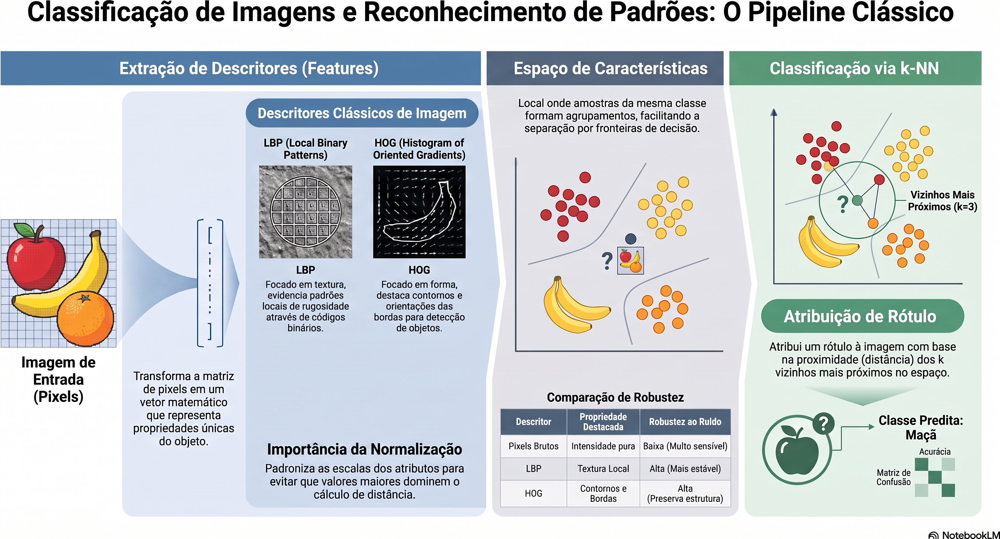
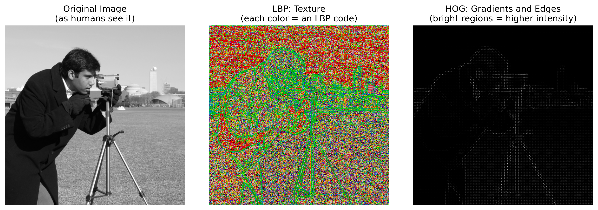
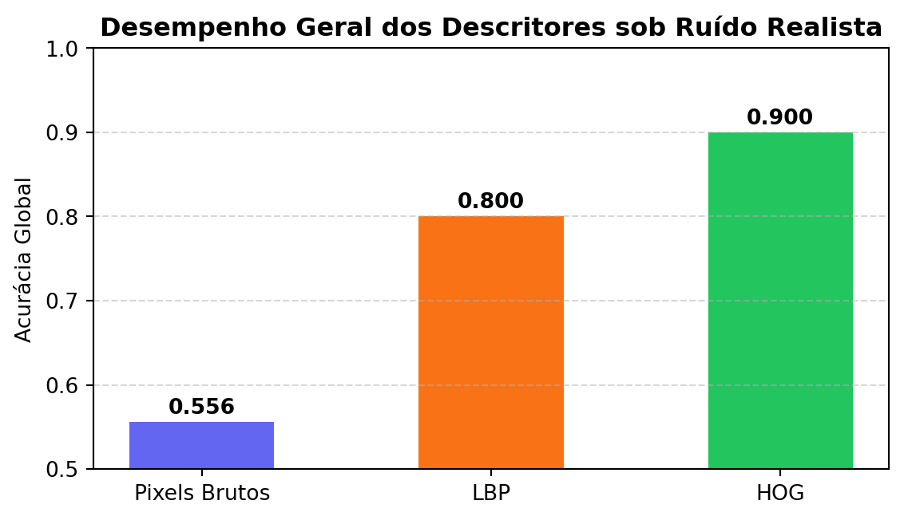
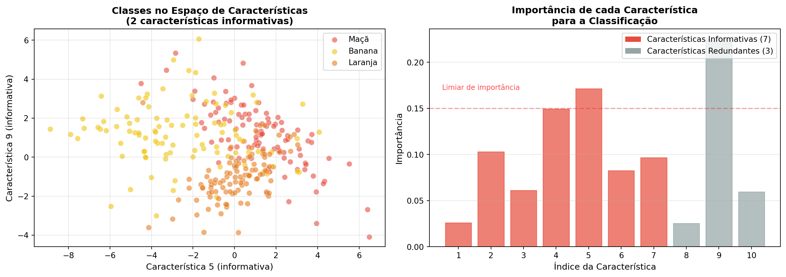
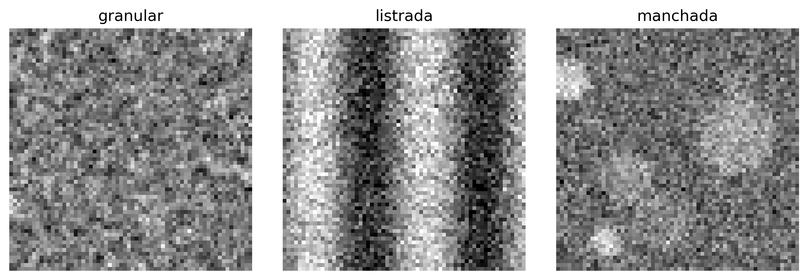
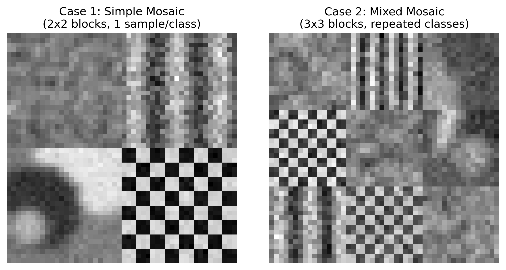

In Chapter 6, the transition from Part I to Part II was presented through two applications that already required automated decisions: mark recognition on answer sheets (OMR) and defect detection in industrial inspection. In both cases, however, the decisions relied on geometric rules and manually defined thresholds, such as determining whether a disk was sufficiently circular or whether a region was dark enough.
This chapter formalizes the more general problem underlying these applications: given a set of labeled examples, how can a system be trained to automatically classify new images or regions of interest? This question lies at the core of Pattern Recognition, a discipline that underpins much of modern Computer Vision tasks, from image classification to object detection and semantic segmentation, explored in the following chapters.
The main classical image descriptors (color, texture, and shape/gradient) and the k-Nearest Neighbors (k-NN) classifier will be studied, chosen for its conceptual simplicity and for directly highlighting the relationship between the feature space, distance metrics, and decision boundaries — concepts that remain central even in classifiers based on deep neural networks, studied in the final chapter of this part.
7.1 Chapter Objectives
By the end of this chapter, the student should be able to:
Understand the classical pattern recognition pipeline: acquisition, preprocessing, descriptor extraction, classification, and evaluation;
Extract and interpret classical descriptors of color, texture (Local Binary Patterns — LBP), and shape/gradient (Histogram of Oriented Gradients — HOG);
Implement and train a k-NN classifier for image classification tasks;
Evaluate classifiers using metrics such as accuracy, confusion matrix, precision, and recall;
Analyze the effect of the k parameter and the dimensionality of the feature space on classifier performance;
Recognize the limitations of hand-crafted features and understand the motivation for the transition, in the following chapters, to automatically learned descriptors.
7.2 Environment Setup
The examples in this chapter use libraries that are widely employed in Digital Image Processing, Computer Vision, and Machine Learning. The block below installs the necessary packages; in environments where they are already available, the execution can be skipped.
import os, urllib.requesturl ="https://raw.githubusercontent.com/fzampirolli/pdi-vc/master/morph/config.py"ifnot os.path.exists("config.py"): urllib.request.urlretrieve(url, "config.py")import configconfig.setup()from morph import mmimport importlibimport subprocessimport sysdef setup_cap07():"""Installs missing libraries needed for this chapter (computer vision and machine learning).""" pacotes = {"cv2": "opencv-python","skimage": "scikit-image","numpy": "numpy","sklearn": "scikit-learn","matplotlib": "matplotlib","pandas": "pandas","seaborn": "seaborn","tabulate": "tabulate","kaleido": "kaleido", }for modulo, pacote in pacotes.items():if importlib.util.find_spec(modulo) isNone: resultado = subprocess.run( [sys.executable, "-m", "pip", "install", "-q", pacote] )if resultado.returncode !=0:print(f"[WARNING] Failed to install {pacote} (needed for the module {modulo}).")setup_cap07()# ==========================================================# Libraries# ==========================================================# Scientific computingimport numpy as npimport pandas as pd# Visualizationimport matplotlib.cm as cmimport matplotlib.pyplot as pltimport seaborn as sns# Computer visionimport cv2from skimage import data as skdatafrom skimage.feature import hog, local_binary_pattern# Machine learningfrom sklearn.datasets import load_digits, make_classificationfrom sklearn.model_selection import cross_val_score, train_test_splitfrom sklearn.neighbors import KNeighborsClassifierfrom sklearn.ensemble import RandomForestClassifierfrom sklearn.preprocessing import StandardScalerfrom sklearn.metrics import ( accuracy_score, classification_report, confusion_matrix, f1_score, precision_score, recall_score,)
✅ Environment ready. Morph: 1.1.9 | OpenCV: 5.0.0
7.3 A Concrete Problem: Fruit Classification
Before presenting the theoretical foundations, consider the following problem, which will be used as an example throughout this chapter to illustrate the main concepts of pattern recognition.
The scenario: An automated farm uses a Computer Vision system to separate apples, bananas, and oranges on packaging lines.
The challenge: The fruits arrive on the conveyor belt in different positions and orientations, under lighting conditions that may vary. Furthermore, leaves, shadows, and small occlusions can hinder their identification. How can we develop a system capable of classifying them correctly?
A possible approach:
Extract descriptors that represent relevant characteristics of the fruits:
Color: predominant color distribution;
Texture: differences in the peel surface;
Shape: geometric characteristics of the contour.
Train a classifier using previously labeled examples.
Use the trained model to automatically classify new fruits.
Figure 7.1 illustrates, conceptually, how different fruits can be represented in a three-dimensional feature space.
TipReflect before continuing
If each fruit were represented only by the intensity values of its pixels, would it be possible to distinguish them reliably? What types of information could be extracted from the image to facilitate this task?
Figure 7.1: Motivational example: different fruits forming distinct clusters in a feature space.
7.4 🗺️ Chapter Overview: The Classic Image Classification Pipeline
Before proceeding, it is useful to present an integrated view of what will be studied. Figure 8.1 shows the general flow of a classic image classification system, from the input image to the final label assignment stage. In the following sections, each of the stages of this process will be studied in detail.

Figure 7.2: Overview of the classic image classification pipeline: descriptor extraction (LBP, HOG), formation of the feature space, and classification via k-NN. Not applicable to Deep Learning models (CNNs, YOLO), which learn features end-to-end directly from pixels. Source: prepared with the aid of Gemini Notebook ({GOOGLE}, 2025).
NoteScope of this chapter
In this chapter, the focus falls exclusively on the k-NN classifier, due to its didactic simplicity and its intuitive illustration of the concept of feature space. Other traditional classifiers widely used in Pattern Recognition — such as Decision Trees, Classification Rules, and Support Vector Machines (SVM) — are discussed in depth in Quilici-gonzalez (2014), especially in its 2nd edition, currently in production (QUILICI-GONZALEZ, 2026).
7.5 Fundamentals of Pattern Recognition
A pattern recognition system aims to assign a category (label) to an observation — an entire image, a region of interest, or a signal — based on previously labeled examples. In general, this process is organized into the following steps:
Acquisition: obtaining the image or signal to be classified;
Pre-processing: normalization, noise removal, geometric or illumination correction — steps already studied in previous chapters;
Feature extraction: transformation of the image into a feature vector of fixed dimension, which represents the relevant properties for the classification task;
Classification: application of a model that associates the feature vector with a class;
Evaluation: analysis of the model’s performance on a dataset independent of the one used for training.
The set of all possible feature vectors constitutes the feature space. A good descriptor produces representations that, in this space, bring observations of the same class closer together and separate observations of distinct classes. This property favors classification methods based on proximity, such as k-NN, and also benefits several other classifiers.
Figure 7.1 illustrates this concept schematically: each fruit is represented by a point in a three-dimensional feature space (color, texture, and shape). Although this space is merely a didactic simplification, it shows how samples from the same class tend to form clusters, while different classes occupy distinct regions, facilitating the classification task.
7.6 Extraction of Classical Descriptors
Before the popularization of deep neural networks, image descriptors were mostly hand-crafted by specialists, based on known statistical or geometric properties. Three classical families are particularly relevant:
Color descriptors: intensity or hue histograms, which capture the distribution of color values in a region, already introduced in Chapter 3 through the mm.hist function;
Texture descriptors: capture local patterns of repetition, roughness, or orientation, such as Local Binary Patterns (LBP), studied below;
Shape/gradient descriptors: describe the distribution of edges and gradient orientations, such as the Histogram of Oriented Gradients (HOG), widely used in the detection of people and other objects.
To compare the information captured by each approach, Figure 7.3 shows how different techniques “see” the same image.
# Load example imageimagem = skdata.camera()# Apply descriptorslbp_img = local_binary_pattern( imagem, P=8, R=1, method="uniform" )# Convert LBP to RGB only to facilitate visualizationlbp_norm = (lbp_img - lbp_img.min()) / (lbp_img.max() - lbp_img.min() +1e-8)lbp_rgb = (cm.nipy_spectral(lbp_norm)[..., :3] *255).astype("uint8")hog_features, hog_img = hog( imagem, orientations=9, pixels_per_cell=(8, 8), cells_per_block=(2, 2), visualize=True,)# Standardized displaymm.show( [imagem, lbp_rgb, hog_img], titles=["Original Image\n(as humans see it)","LBP: Texture\n(each color = an LBP code)","HOG: Gradients and Edges\n(bright regions = higher intensity)", ], cols=3, figsize=(12, 4),)print("Notice how each descriptor highlights different properties:")print("• LBP: highlights local texture patterns.")print("• HOG: highlights edges and border orientations.")print("• Original image: contains only intensity values.")

Figure 7.3: Visual comparison of different descriptors applied to the same image. Each descriptor reveals distinct aspects of the scene.
Notice how each descriptor highlights different properties:
• LBP: highlights local texture patterns.
• HOG: highlights edges and border orientations.
• Original image: contains only intensity values.
7.6.1Local Binary Patterns (LBP)
LBP is a texture descriptor that encodes, for each central pixel \(g_c\), the relationship between its intensity and that of the \(P\) neighbors arranged in a circular neighborhood of radius \(R\):
\((x_c, y_c)\) are the coordinates of the central pixel;
\(g_c\) is the intensity of the central pixel;
\(g_p\) is the intensity of the \(p\)-th neighboring pixel;
\(P\) is the number of neighbors considered;
\(R\) is the radius of the circular neighborhood;
\(p\) is the neighbor index, with \(p = 0, 1, \ldots, P-1\);
\(s(z)\) is the threshold function defined in the equation, where \(z = g_p - g_c\); it assumes a value of 1 when \(z \geq 0\) and 0 when \(z < 0\);
\(2^p\) corresponds to the binary weight associated with the \(p\)-th neighbor.
The resulting LBP code describes the local contrast pattern around the pixel. The histogram of these codes forms a compact feature vector for representing image texture (Figure 7.4). In this chapter, the uniform variant is used, which groups non-uniform patterns into a single category, reducing dimensionality and increasing the robustness of the descriptor.
Figure 7.4: Histogram of LBP codes from the cameramen image. Each bar represents the relative frequency of an LBP code, forming the feature vector used to describe the texture.
TipFunction local_binary_pattern
The implementation used in this chapter is provided by the library scikit-image:
P: number of equally spaced neighbors in the circular neighborhood;
R: radius of the neighborhood, in pixels;
method: encoding strategy. In this chapter, the value "uniform" is used.
The equation presented earlier describes the original LBP. In the implementation adopted in this chapter, the method="uniform" option initially calculates this code and then remaps non-uniform patterns into a single category, reducing the dimensionality of the descriptor and making it more robust to small local variations.
Figure 7.3 presents the visual representation of the LBP, while Figure 7.4 shows the histogram of LBP codes used as a feature vector.
Practical Project 2 (section Comparison of Descriptors for Texture Classification) employs LBP in the classification of different types of synthetic texture.
7.6.2Histogram of Oriented Gradients (HOG)
HOG is a descriptor that represents the shape of an object through the distribution of local gradient orientations. As in the Canny operator (Chapter 6), the gradient is initially computed:
\(f(x,y)\) is the image intensity at pixel \((x,y)\);
\(\frac{\partial f}{\partial x}\) and \(\frac{\partial f}{\partial y}\) are, respectively, the partial derivatives of the image in the horizontal and vertical directions;
\(|\nabla f(x,y)|\) is the magnitude of the gradient vector at pixel \((x,y)\), indicating the strength of the local variation in the image;
\(\theta(x,y)\) is the orientation of the gradient vector at pixel \((x,y)\), computed by the function \(\operatorname{atan2}\), whose result belongs to the interval \((-\pi,\pi]\).
Although \(\theta(x,y)\), as computed by the function \(\operatorname{atan2}\), belongs to the interval \((-\pi,\pi]\), the standard HOG implementation uses the unsigned gradient: opposite orientations (e.g., \(0\) and \(\pi\)) are treated as equivalent, and the angles are mapped to the interval \([0,\pi)\) before constructing the histogram. This choice makes the descriptor invariant to the direction of contrast (e.g., a light-dark edge and a dark-light edge produce the same orientation).
The image is then divided into cells. For each cell, a histogram of gradient orientations is constructed, weighted by the corresponding magnitude. The concatenation of the histograms from all cells forms the HOG feature vector, which represents the spatial distribution of gradient orientations and captures information about the shape and contours of the object (Figure 7.5).
n =100plt.figure(figsize=(8, 3))plt.bar(range(n), hog_features[:n], width=0.9)plt.title("Primeiros componentes do vetor HOG")plt.xlabel(f"Índice do componente (0–{n-1}, de um total de {hog_features.shape[0]})")plt.ylabel("Valor normalizado")plt.grid(axis="y", alpha=0.3)plt.tight_layout()plt.show()
Figure 7.5: First 100 components of the HOG feature vector.
TipFunction hog
The extraction of the HOG descriptor is performed by the function:
orientations: number of angular divisions of the orientation histogram in each cell;
pixels_per_cell: size, in pixels, of each cell where the histogram is computed;
cells_per_block: number of cells used in descriptor normalization;
visualize: when True, it also returns an image illustrating the gradients used by the HOG.
The equation presented previously describes the computation of the gradient magnitude and orientation, which form the basis of the HOG descriptor. In the implementation adopted in this chapter, the hog() function uses this information to build orientation histograms in each cell of the image and then performs block normalization (cells_per_block), reducing the descriptor’s sensitivity to variations in illumination and contrast.
Figure 7.3 presents the visual representation of the HOG, while Figure 7.5 illustrates the first components of the feature vector extracted from the image.
Practical Project 1 (section Classification of Handwritten Digits with k-NN) compares the performance of HOG descriptors with the direct use of pixel intensities as the feature vector.
7.6.3 The Impact of Scale and Feature Normalization
The \(k\)-NN classifier makes its decisions based on the distance between feature vectors. Therefore, the scale of each feature directly influences the classification outcome. If a variable has values much larger than the others (for example, a color intensity ranging from \(0\) to \(255\), while a circularity index ranges from \(0\) to \(1\)), it tends to dominate the distance calculation, reducing the influence of the other descriptors.
To avoid this issue, a feature normalization step is applied, typically through standardization (Z-score standardization). In this procedure, each feature is adjusted to have a mean of zero and a standard deviation of one, making quantities originally measured on different scales comparable.
Standardization is performed through the transformation
\[
z = \frac{x - \mu}{\sigma},
\]
where:
\(x\) is the original value of the feature;
\(\mu\) is the mean of that feature computed over the training set;
\(\sigma\) is the standard deviation of the feature;
\(z\) is the standardized value.
After this transformation, all features have a mean equal to zero and a standard deviation equal to one, allowing them to contribute in a balanced manner to the distance calculation.
TipStandardScaler Class
The standardization used in this chapter is performed by the StandardScaler class from the scikit-learn library:
from sklearn.preprocessing import StandardScalerscaler = StandardScaler()X_norm = scaler.fit_transform(X)
where:
StandardScaler(): creates the object responsible for standardization;
fit_transform(X): computes the mean and standard deviation of each feature in the set X and returns the standardized matrix.
In practice, the fit_transform() method performs two steps: first (fit), it estimates the mean (\(\mu\)) and the standard deviation (\(\sigma\)) of each feature; then (transform), it applies the standardization transformation presented earlier to all values in the input matrix.
Figure 7.6 shows the effect of normalization. Visually, the distribution of the points remains the same; what changes is the scale of the axes. Without normalization, the feature with the greatest magnitude dominates the distance calculation between samples. After standardization, all features contribute in a balanced manner to the distance calculation used by the \(k\)-NN classifier.
# Synthetic data with very different scalesnp.random.seed(42)X_demo = np.random.randn(20, 2) * [100, 1]y_demo = np.array([0] *10+ [1] *10)print("Effect of normalization:")print(" Feature 1: scale ≈ 100")print(" Feature 2: scale ≈ 1")print("\nWithout normalization, the first feature dominates the distance calculation.")print("With normalization, both contribute in a balanced way.")print("\nNormalization is essential when features have different scales.")fig, axes = plt.subplots(1, 2, figsize=(10, 4))# Without normalizationaxes[0].scatter( X_demo[y_demo ==0, 0], X_demo[y_demo ==0, 1], c="blue", label="Classe 0")axes[0].scatter( X_demo[y_demo ==1, 0], X_demo[y_demo ==1, 1], c="red", label="Classe 1")axes[0].set_title("Sem Normalização\n(escalas diferentes)")axes[0].set_xlabel("Característica 1 (escala 100)")axes[0].set_ylabel("Característica 2 (escala 1)")axes[0].legend()# With normalizationscaler = StandardScaler()X_norm = scaler.fit_transform(X_demo)axes[1].scatter( X_norm[y_demo ==0, 0], X_norm[y_demo ==0, 1], c="blue", label="Classe 0")axes[1].scatter( X_norm[y_demo ==1, 0], X_norm[y_demo ==1, 1], c="red", label="Classe 1")axes[1].set_title("Com Normalização\n(características balanceadas)")axes[1].set_xlabel("Característica 1")axes[1].set_ylabel("Característica 2")axes[1].legend()plt.tight_layout()plt.show()
Effect of normalization:
Feature 1: scale ≈ 100
Feature 2: scale ≈ 1
Without normalization, the first feature dominates the distance calculation.
With normalization, both contribute in a balanced way.
Normalization is essential when features have different scales.
Figure 7.6: Importance of feature normalization for the k-NN classifier.
7.7 📌 Concept Map
Up to this point, we have presented the classical descriptors (LBP, HOG, raw pixels) and how they organize samples in a feature space. Figure 7.7 synthesizes this path and situates these steps within the overall flow of a classical image classification system, also indicating the subsequent steps — classification (k-NN) and result evaluation — which will be formalized in the following sections.
Figure 7.7: Concept map of the image classification process using classical descriptors (LBP, HOG, raw pixels) and a traditional classifier (k-NN). It does not apply to Deep Learning models (CNNs, YOLO), which learn features end-to-end directly from pixels.
7.8 Descriptors in Practice
After learning about the main classical descriptors, it is natural to ask how they influence the performance of a classifier in situations close to those encountered in practice.
In this section, we compare the use of three distinct representations of the same images: pixel intensities, LBP descriptors, and HOG descriptors. To make the experiment more realistic, synthetic noise is added to the data, at different intensities for each descriptor — a simplified way of simulating the fact that, in practice, different representations tolerate capture imperfections unequally (sensor noise, small position variations, etc.).
Figure 7.8 presents the confusion matrices obtained for each descriptor, allowing us to identify in which classes the main classification errors occur. The interpretation of these matrices was introduced in Chapter 1, when the concepts of True Positive (TP), False Positive (FP), True Negative (TN), and False Negative (FN) were presented. These concepts were explored in EPs 01_02 (classification metrics) and 01_03 (mean Average Precision – mAP), available at:
In this chapter, confusion matrices are used to analyze how different descriptors influence classifier performance.
Next, Figure 7.9 summarizes the overall accuracy obtained by each descriptor.
The results show that classifier performance depends directly on the representation chosen to describe the images. While the direct use of pixel intensities is more sensitive to the introduced degradations, LBP and HOG descriptors better preserve the information relevant to classification, resulting in higher performance in this scenario. It is important to emphasize that the noise levels applied to each descriptor were chosen for didactic purposes only, so as to illustrate the general principle that more elaborate descriptors may be more robust to degradations — which does not mean that this relationship always holds, as the case study in the next section will demonstrate.
TipHow the experiment is conducted
Since the goal of this section is to compare only the effect of the descriptors, a simple synthetic dataset is generated: three Gaussian point clouds, centered at the same “color, texture, and shape” values already used in Figure 7.1 — the same pattern employed since the beginning of the chapter to represent the three fruit classes.
centros = {"Maçã": [0.8, 0.2, 0.9],"Banana": [0.3, 0.1, 0.2],"Laranja": [0.9, 0.8, 0.8],}n_por_classe =100X = np.vstack([ np.random.normal(centro, 0.12, (n_por_classe, 3))for centro in centros.values()])y = np.repeat(list(centros.keys()), n_por_classe)
where:
centros: dictionary with the mean point of each class in the feature space (color, texture, shape);
n_por_classe: number of samples generated per class;
np.random.normal(centro, 0.12, (n_por_classe, 3)): generates n_por_classe samples around each center, with a standard deviation of 0.12 in each dimension;
np.repeat(list(centros.keys()), n_por_classe): generates the corresponding label vector, in the same order as the centers.
Next, the training and evaluation pipeline is used:
train_test_split(X, y, test_size=0.3): splits the data into training (70%) and testing (30%);
KNeighborsClassifier(n_neighbors=5): creates a \(k\)-NN classifier with \(k=5\) neighbors;
fit(X_train, y_train): fits the model to the training data;
predict(X_test): classifies the test samples;
accuracy_score(y_test, y_pred): computes the accuracy;
confusion_matrix(y_test, y_pred): generates the confusion matrix.
In this experiment, the training set, the classifier, and the evaluation method remain exactly the same. The only difference between the experiments is the representation used for each image (raw pixels, LBP, or HOG), allowing the exclusive evaluation of the influence of the descriptor on the classifier’s performance.
classes = ["Maçã", "Banana", "Laranja"]np.random.seed(42)# Same class centers (color, texture, shape) used in the# previous example, now reused to generate the synthetic# training and testing data for this experiment.centros = {"Maçã": [0.8, 0.2, 0.9],"Banana": [0.3, 0.1, 0.2],"Laranja": [0.9, 0.8, 0.8],}n_por_classe =100X = np.vstack([ np.random.normal(centro, 0.12, (n_por_classe, 3))for centro in centros.values()])y = np.repeat(list(centros.keys()), n_por_classe)# Simulate descriptors with different levels of sensitivity to noise.# The more noise added, the worse the representation tends to be.descritores = {"Pixels Brutos": X +0.5* np.random.randn(*X.shape),"LBP": X +0.3* np.random.randn(*X.shape),"HOG": X +0.2* np.random.randn(*X.shape),}# Create a single figure with 3 subplots side by side for the matricesfig, axes = plt.subplots(1, 3, figsize=(14, 4))resultados = {}for idx, (nome, Xd) inenumerate(descritores.items()): X_train, X_test, y_train, y_test = train_test_split(Xd, y, test_size=0.3, random_state=42) knn = KNeighborsClassifier(n_neighbors=5) knn.fit(X_train, y_train) y_pred = knn.predict(X_test) acc = accuracy_score(y_test, y_pred) resultados[nome] = acc# Confusion matrix in the corresponding subplot cm = confusion_matrix(y_test, y_pred, labels=classes) sns.heatmap( cm, annot=True, fmt="d", cmap="Blues", cbar=False, xticklabels=classes, yticklabels=classes, ax=axes[idx], ) axes[idx].set_title(f"{nome}\nAcurácia: {acc:.3f}", fontsize=11, fontweight="bold" ) axes[idx].set_xlabel("Classe Predita") axes[idx].set_ylabel("Classe Real")plt.tight_layout()plt.show()
Figure 7.8: Confusion matrices obtained by the k-NN classifier using three different descriptors. The rows represent the actual class (Apple, Banana, and Orange) and the columns the predicted class. The greater the concentration of values on the main diagonal, the better the descriptor’s performance.
# Visual comparison in a standalone figureplt.figure(figsize=(6, 3.5))nomes =list(resultados.keys())acuracia =list(resultados.values())colors = ['#6366f1', '#f97316', '#22c55e']bars = plt.bar(nomes, acuracia, color=colors, width=0.5)plt.ylabel('Acurácia Global')plt.title('Desempenho Geral dos Descritores sob Ruído Realista', fontsize=12, fontweight='bold')plt.ylim(0.5, 1.0)plt.grid(axis='y', linestyle='--', alpha=0.5)# Add the values above the bars using standard rounding for displayfor bar, val inzip(bars, acuracia): plt.text(bar.get_x() + bar.get_width()/2, bar.get_height() +0.01,f'{val:.3f}', ha='center', fontweight='bold', fontsize=10)plt.tight_layout()plt.show()print("Analysis of results:")print("- Raw Pixels: Sensitive to local lighting variations and noise.")print("- LBP: Good tolerance to global monotonic lighting variations.")print("- HOG: Excellent for contours and stable shapes under small geometric fluctuations.")

Figure 7.9: Detailed comparison of global accuracy in a realistic scenario. Note how structurally extracted descriptors (LBP and HOG) outperform the use of pure raw pixel intensities.
Analysis of results:
- Raw Pixels: Sensitive to local lighting variations and noise.
- LBP: Good tolerance to global monotonic lighting variations.
- HOG: Excellent for contours and stable shapes under small geometric fluctuations.
7.9 A Concrete Problem: Simulating Fruit Descriptors
Returning to the fruit classification problem presented at the beginning of the chapter, each image can be represented by a feature vector obtained from the extraction of color, texture, and shape descriptors. Table 7.1 presents some descriptors frequently used in Computer Vision applications, including techniques introduced in Chapter 3 and in this chapter.
Table 7.1: Set of chromatic, textural, and geometric descriptors used to represent fruit images.
Feature
Description
R, G, B
mean intensity of the red, green, and blue channels
NC
mean intensity in grayscale
LBP
texture descriptor (Local Binary Pattern)
HOG
shape descriptor (Histogram of Oriented Gradients)
Area
number of pixels in the object
Perimeter
contour length
Circularity
measure of how circular the object is
Width/height ratio
proportion between the width and height of the region
In this example, each image is represented by the vector
In practice, LBP and HOG are not scalar values but histograms with dozens or hundreds of components. In this section, each of them is represented by a single value only to simplify the presentation. In real applications, these positions would be replaced by the full components of the respective histograms.
In real applications, not all descriptors contribute equally to distinguishing the classes. Some provide more relevant information, while others may be redundant or poorly discriminative.
To reproduce this scenario in a controlled manner, make_classification() from the scikit-learn library will be used. The function generates a synthetic dataset whose features can be interpreted as image descriptors, allowing one to define how many of them will be informative for classification.
In this example, ten synthetic features are generated, of which only seven (n_informative=7) participate in the separation among the three classes. The remaining ones simulate poorly informative or redundant attributes. Figure 7.10 presents a conceptual representation of this process.
Before introducing the algorithm that will be studied in detail in this chapter, a remark is in order: to identify, among the ten synthetic features, which ones are most discriminative — and thus select two of them for 2D visualization — a Random Forest is used only as an auxiliary diagnostic tool. The KNN, the focus of this chapter, is presented next.
# Configuration for reproducibilitynp.random.seed(42)# Generation of synthetic data with controlled featuresX, y = make_classification( n_samples=300, n_features=10, n_informative=7, n_redundant=2, n_repeated=1, # One feature is a copy of another n_classes=3, n_clusters_per_class=1, random_state=42,)# Create figure with two subplotsfig, (ax1, ax2) = plt.subplots(1, 2, figsize=(14, 5))# Subplot 1: Visualization of classes in 2D (using two informative features)# Identify which features are most informativerf = RandomForestClassifier(n_estimators=100, random_state=42)rf.fit(X, y)importancias = rf.feature_importances_caracteristicas_informativas = np.argsort(importancias)[-2:] # Two most importantcores = {0: "#e74c3c", 1: "#f1c40f", 2: "#e67e22"} # Apple, Banana, Orangerotulos = {0: "Maçã", 1: "Banana", 2: "Laranja"}for classe inrange(3): idx = y == classe ax1.scatter(X[idx, caracteristicas_informativas[0]], X[idx, caracteristicas_informativas[1]], c=cores[classe], label=rotulos[classe], alpha=0.6, s=50, edgecolors="white", linewidth=0.5)ax1.set_xlabel(f"Característica {caracteristicas_informativas[0]+1} (informativa)", fontsize=11)ax1.set_ylabel(f"Característica {caracteristicas_informativas[1]+1} (informativa)", fontsize=11)ax1.set_title("Classes no Espaço de Características\n(2 características informativas)", fontsize=12, fontweight="bold")ax1.legend(loc="upper right")ax1.grid(alpha=0.3)# Subplot 2: Feature importancebars = ax2.bar(range(1, 11), importancias, color="#4a90d9", alpha=0.7)ax2.set_xlabel("Índice da Característica", fontsize=11)ax2.set_ylabel("Importância", fontsize=11)ax2.set_title("Importância de cada Característica\npara a Classificação", fontsize=12, fontweight="bold")ax2.set_xticks(range(1, 11))ax2.grid(axis="y", alpha=0.3)# Color bars to highlight featurescores_barras = ["#e74c3c"if i <7else"#95a5a6"for i inrange(10)]for bar, cor inzip(bars, cores_barras): bar.set_color(cor)# Add legendfrom matplotlib.patches import Patchlegenda_elements = [ Patch(facecolor="#e74c3c", label="Características Informativas (7)"), Patch(facecolor="#95a5a6", label="Características Redundantes (3)")]ax2.legend(handles=legenda_elements, loc="upper right")# Annotate the number of informative featuresax2.axhline(y=0.15, color="red", linestyle="--", alpha=0.3)ax2.text(0.5, 0.17, "Limiar de importância", fontsize=9, color="red", alpha=0.7)plt.tight_layout()plt.show()print("\n🔍 Analysis of the generated data:")print(f" • Total samples: {X.shape[0]}")print(f" • Number of features: {X.shape[1]}")print(f" • Informative features: 7 (columns 1 to 7 of the chart)")print(f" • Redundant features: 2 (columns 8 and 9)")print(f" • Duplicated features: 1 (column 10)")print(f" • Class distribution: {np.bincount(y)}")

Figure 7.10: Illustration of the synthetic data generation process with make_classification. On the left, visualization of the three classes in a two-dimensional space formed by two informative features. On the right, relative importance of each feature for classification, showing that only 7 of the 10 features are effectively discriminative, while the others are redundant (2) or duplicated (1).
🔍 Analysis of the generated data:
• Total samples: 300
• Number of features: 10
• Informative features: 7 (columns 1 to 7 of the chart)
• Redundant features: 2 (columns 8 and 9)
• Duplicated features: 1 (column 10)
• Class distribution: [101 98 101]
7.10 k-NN Classifier: How It Works Internally
The k-Nearest Neighbors (k-NN) is one of the simplest and most intuitive classification algorithms in Machine Learning. Unlike many classifiers, it does not explicitly build a model during the training stage. Instead, it stores the labeled samples and, when a new sample needs to be classified, it looks for those that most resemble it.
The algorithm’s principle is based on the hypothesis that samples with similar characteristics tend to belong to the same class. To quantify this proximity, k-NN uses a distance measure between feature vectors.
As an example, consider Table 7.2, which presents a simplified version of the fruit classification problem using only two features: color intensity and circularity, both normalized in the range from 0 to 1.
Table 7.2: Simplified example of fruit classification using two normalized features.
Sample
Color
Circularity
Class
Fruit 1
0.82
0.88
Apple
Fruit 2
0.30
0.20
Banana
Fruit 3
0.88
0.85
Apple
Fruit ? (test)
0.80
0.90
?
Observing only these two features, one notices that the test fruit is much closer to the samples labeled as Apple than to the sample labeled as Banana. In the following section, this intuitive notion of proximity will be formalized through a distance metric, used by the algorithm to identify the nearest neighbors and decide the class of the new sample.
7.10.1 Distance Metric
The proximity between two samples is typically quantified by the Euclidean distance, defined as
\(x_j\) and \(x_{i,j}\) represent the \(j\)-th feature.
In the implementation of this chapter, \(x\) corresponds to a row of X_test and \(x_i\) to a row of X_train. The predict() method automatically computes the distance between \(x\) and all training samples.
where \(y_i\) is the label of sample \(x_i\) and \(\hat y\) is the class assigned to the test sample.
In the example, for \(k=3\), the neighbors are Fruit 1 (Apple), Fruit 3 (Apple), and Fruit 2 (Banana). Since Apple receives two votes, this is the predicted class.
TipKNeighborsClassifier Class
In this chapter, the algorithm is implemented using the KNeighborsClassifier class from the scikit-learn library:
from sklearn.neighbors import KNeighborsClassifierknn = KNeighborsClassifier(n_neighbors=3)knn.fit(X_train, y_train)y_pred = knn.predict(X_test)
where:
KNeighborsClassifier(n_neighbors=3): sets the value of \(k\);
fit(X_train, y_train): stores the training samples (X_train) and their labels (y_train);
predict(X_test): returns the predicted classes for the samples in X_test.
Internally, predict() performs the steps described earlier: it calculates the distances, identifies the \(k\) nearest neighbors, and determines the class by majority voting.
Figure 7.11 illustrates this procedure on a two-dimensional dataset. The figure highlights the neighbors used in the classification, while the console displays the algorithm’s steps: distance calculation, sorting, neighbor selection, voting, and class prediction.
def knn_passo_a_passo(X, y, x, k=3):"""Runs the five steps of the k-NN algorithm. Parameters: X (training), y (labels), x (test), and k (number of neighbors). """# 1. Distances dist = [(np.linalg.norm(x-xi), yi, i) for i, (xi, yi) inenumerate(zip(X, y))]print(f"1. Distances computed: {len(dist)}")# 2. Sorting dist.sort(key=lambda t: t[0])print("2. Sorted distances")# 3. Selection vizinhos = dist[:k]print(f"3. {k} nearest neighbors:")for d, c, _ in vizinhos:print(f" {d:.4f} → {c}")# 4. Voting votos = {}for _, c, _ in vizinhos: votos[c] = votos.get(c, 0) +1print("4. Votes:", votos)# 5. Decision classe =max(votos, key=votos.get)print("5. Predicted class:", classe)return classe, vizinhos# Example datanp.random.seed(4)X = np.r_[np.random.randn(15,2)+[2,2], np.random.randn(15,2)+[-2,-2]]y = np.array(["Classe A"]*15+ ["Classe B"]*15)x = np.array([0.5,0.5])classe, vizinhos = knn_passo_a_passo(X, y, x)# Visualizationplt.figure(figsize=(5,5))for c, rotulo in [("Classe A","Classe A"), ("Classe B","Classe B")]: P = X[y==c] plt.scatter(P[:,0], P[:,1], s=80, label=rotulo)plt.scatter(*x, marker="*", s=220, edgecolors="black", label="Teste")for _, _, i in vizinhos: plt.scatter(*X[i], s=220, facecolors="none", edgecolors="black", linewidths=2) plt.plot([x[0], X[i,0]], [x[1], X[i,1]], "--", lw=1)plt.xlabel("Característica 1")plt.ylabel("Característica 2")plt.title(f"k-NN ($k=3$): classe predita = {classe}")plt.legend()plt.grid(alpha=.3)plt.axis("equal")plt.tight_layout()plt.show()
1. Distances computed: 30
2. Sorted distances
3. 3 nearest neighbors:
1.0850 → Classe A
1.6379 → Classe B
1.6382 → Classe A
4. Votes: {np.str_('Classe A'): 2, np.str_('Classe B'): 1}
5. Predicted class: Classe A
Figure 7.11: Classification of a new sample by the k-NN algorithm. The test point (star) is classified using the three nearest neighbors, highlighted by circles.
7.10.3 The Role of the Parameter \(k\)
The parameter \(k\) determines how many neighbors participate in the classification decision.
Small values of \(k\) (for example, \(k=1\)) make the classifier more sensitive to noise and local variations, producing more irregular decision boundaries and favoring overfitting.
Larger values of \(k\) produce smoother decision boundaries, but may reduce sensitivity to local structures, favoring underfitting.
In problems with two classes, it is common to use odd values of \(k\) to reduce the occurrence of ties.
Another important aspect is the curse of dimensionality. As the number of features increases, the distances between samples tend to become more similar, making it difficult to identify truly representative neighbors.
NoteSummary
The k-NN algorithm can be summarized in three steps:
extract the feature vector of the new sample;
identify the \(k\) nearest neighbors;
classify the sample by the most frequent class among those neighbors.
The simulator in Figure 7.12 allows you to visually explore the effect of the parameter \(k\) on the decision boundary.
📌 Simulator: k-NN Decision BoundaryClick the canvas to add points
Neighbors (k)
3
Blue Class
0
Red Class
0
Blue Class
Red Class
The colored background region represents the class assigned by the algorithm to each point in the space.
Figure 7.12: Interactive simulator of the k-NN decision boundary: add training points and adjust the value of k to observe the effect on the decision region.
7.11 Practical Project 1: Handwritten Digit Classification with k-NN
The previous sections presented the k-NN algorithm through a simplified fruit classification example, using only two features. Next, the same algorithm is applied to an image dataset, in which each sample is represented by a higher-dimensional vector.
As a case study, the public load_digits database, provided by the scikit-learn library, is used. This dataset contains 1797 images of handwritten digits from classes 0 to 9, each with a resolution of \(8 \times 8\) pixels in grayscale. Each image is represented by a vector with 64 features, corresponding to pixel intensities, and each vector has a label indicating the corresponding digit.
The load_digits database is provided by the scikit-learn library and is used in this chapter to illustrate the application of the k-NN algorithm. In addition to being available directly in scikit-learn, it eliminates the need for additional steps of data acquisition and preparation, allowing attention to be focused on the implementation and evaluation of the classifier.
Figure 7.13 presents a sample of the images from the database.
digits = load_digits()print(f"Total samples: {digits.data.shape[0]}, vector dimension: {digits.data.shape[1]}")print(f"Classes: {[int(i) for i insorted(set(digits.target))]}")n_amostras =16imgs =list(digits.images[:n_amostras])imgs_titles = [str(label) for label in digits.target[:n_amostras]]mm.show(imgs, titles=imgs_titles, cols=8, figsize=(12, 4))
Figure 7.13: Sample of handwritten digits from the load_digits dataset, used as a classification case study.
7.11.1 Classification with Intensity Vectors
In this first experiment, each \(8 \times 8\) image is represented directly by the intensities of its 64 pixels, without extracting additional descriptors. Thus, each sample corresponds to a vector of 64 features, used as input to the k-NN classifier.
Next, the dataset is divided into training and test subsets, preserving the proportion of the ten classes through the parameter stratify=y. The classifier is trained with \(k=3\) and evaluated on the test set using accuracy and the confusion matrix shown in Figure 7.14.
Figure 7.14: Confusion matrix of the k-NN classifier trained with raw intensity vectors (pixels).
7.11.2 Classification with HOG Descriptors
In the previous experiment, each image was represented directly by the intensities of its pixels. In this section, this representation is replaced by HOG descriptors (Histogram of Oriented Gradients), which encode information about the distribution of gradient orientations in the image.
The same data partitioning, the same k-NN classifier, and the same evaluation protocol are maintained, with only the image representation being changed. Figure 7.15 compares the results obtained with intensity vectors and with HOG descriptors.
descritores_hog = np.array([ hog(img, orientations=8, pixels_per_cell=(4, 4), cells_per_block=(1, 1))for img in digits.images])print(f"HOG vector dimension: {descritores_hog.shape[1]}")Xh_treino, Xh_teste, yh_treino, yh_teste = train_test_split( descritores_hog, y, test_size=0.3, random_state=42, stratify=y)n_neighbors =3knn_hog = KNeighborsClassifier(n_neighbors=n_neighbors)knn_hog.fit(Xh_treino, yh_treino)pred_hog = knn_hog.predict(Xh_teste)acc_hog = accuracy_score(yh_teste, pred_hog)print(f"Accuracy (HOG descriptor, k={n_neighbors}): {acc_hog:.4f}")plt.figure(figsize=(4, 3))plt.bar(["Pixels brutos", "HOG"], [acc_pixels, acc_hog], color=["#6366f1", "#f97316"])plt.ylim(0, 1.1) # Increases the upper limit to give spaceplt.ylabel("Acurácia")plt.title("Comparação de Descritores")for i, v inenumerate([acc_pixels, acc_hog]): plt.text(i, v +0.02, f"{v:.3f}", ha="center") # Increases the vertical offsetplt.tight_layout()
Figure 7.15: Comparison of accuracy between raw pixel descriptors and HOG for the k-NN classifier (k=3) on the digits dataset.
NoteWhy does this happen?
In Figure 7.15, the classifier trained with pixel intensity vectors achieves higher accuracy (\(0.987\)) than the one based on HOG descriptors (\(0.759\)). This result is related to the characteristics of the load_digits dataset.
The images have a resolution of only \(8\times8\) pixels, are approximately centered, and exhibit little variation in illumination, scale, and orientation. In this scenario, pixel intensities preserve virtually all the information needed to distinguish the classes. In contrast, HOG summarizes the image into histograms of gradient orientations, reducing part of the spatial detail available in the original pixels.
This reduction in information can make it harder to separate visually similar digits, such as 3 and 8 or 4 and 9, especially when the image resolution is low.
In problems with higher-resolution images or those subject to variations in illumination, position, scale, or small deformations, descriptors such as HOG tend to better represent the local structure of the image than individual pixel values. Thus, this experiment illustrates an important principle of Machine Learning: the data representation should be chosen according to the characteristics of the problem, not by the complexity of the descriptor.
7.12 Classifier Evaluation
In the previous sections, the quality of the classifier was analyzed through accuracy and the confusion matrix. In this section, these tools are complemented by metrics used in model evaluation and by a procedure for selecting the value of the parameter \(k\).
Accuracy corresponds to the proportion of correctly classified samples. Although it is a simple and widely used measure, it may be insufficient when classes exhibit highly imbalanced distributions.
From the confusion matrix — introduced in Chapter 1 and used throughout this chapter — class-specific metrics can be calculated, such as precision and recall:
where \(TP\), \(FP\), and \(FN\) represent, respectively, the number of true positives, false positives, and false negatives for the class under analysis. Precision quantifies the proportion of correct positive predictions, while recall measures the classifier’s ability to identify examples belonging to the class.
7.12.1 Choosing \(k\) by Cross-Validation
In the previous experiments, \(k=3\) was adopted to illustrate how the algorithm works. However, this parameter directly influences the classifier’s performance and, in practice, should be selected based on the data.
A widely used approach is cross-validation, in which the training set is divided into successive partitions to estimate the model’s performance on data not used during training.
The following code computes the average accuracy obtained by five-fold cross-validation for different values of \(k\). The results are presented in Figure 7.16, allowing the identification of the region where the classifier achieves its best performance.
valores_k =range(1, 16)acuracias_medias = []for k in valores_k: modelo = KNeighborsClassifier(n_neighbors=k) scores = cross_val_score(modelo, X, y, cv=5) acuracias_medias.append(scores.mean())melhor_k =list(valores_k)[int(np.argmax(acuracias_medias))]print(f"Best k value found: {melhor_k} (mean accuracy={max(acuracias_medias):.4f})")plt.figure(figsize=(6, 4))plt.plot(list(valores_k), acuracias_medias, marker="o", color="#4f46e5")plt.axvline(melhor_k, color="#f97316", linestyle="--", label=f"melhor k = {melhor_k}")plt.xlabel("k")plt.ylabel("Acurácia média (validação cruzada)")plt.title("Seleção de k por Validação Cruzada")plt.legend()plt.grid(alpha=0.3)plt.tight_layout()
Best k value found: 2 (mean accuracy=0.9672)
Figure 7.16: Mean accuracy by cross-validation (5 folds) as a function of parameter k, for the digit base with raw intensity vectors.
7.12.2 The Bias-Variance Trade-off: Diagnosing Overfitting and Underfitting
The hyperparameter \(k\) influences the complexity of the k-NN classifier’s decision boundary and, consequently, its generalization capability. In general terms, small values of \(k\) make the model more sensitive to training samples, while larger values produce smoother decision boundaries.
These behaviors are associated with the trade-off between bias and variance. Very small values of \(k\) tend to increase the risk of overfitting, especially in noisy datasets, whereas very large values can lead to underfitting, reducing the model’s ability to capture local data structures.
While Figure 7.16 presented only the average accuracy obtained through cross-validation, Figure 7.17 compares training and test accuracies for different values of \(k\). The highlighted regions in the plot represent the algorithm’s expected behavior: a higher risk of overfitting for small values of \(k\), an intermediate region that often yields a good balance between bias and variance, and a higher risk of underfitting for large values of \(k\).
However, these regions should be interpreted only as a conceptual reference. The observed behavior depends on the characteristics of the dataset. In the load_digits dataset, for example, the images exhibit low variability and good class separation, so small values of \(k\) may perform similarly—or even better—than others, without showing significant overfitting.
k_values =range(1, 16)train_acc, test_acc = [], []for k in k_values: knn = KNeighborsClassifier(n_neighbors=k).fit(X_treino, y_treino) train_acc.append(accuracy_score(y_treino, knn.predict(X_treino))) test_acc.append(accuracy_score(y_teste, knn.predict(X_teste)))plt.figure(figsize=(9,5))plt.plot(k_values, train_acc, "o-", lw=2, label="Treinamento")plt.plot(k_values, test_acc, "s-", lw=2, label="Teste")plt.axvspan(1, 3, color="#fca5a5", alpha=.25, label="Maior risco de overfitting")plt.axvspan(3,11, color="#86efac", alpha=.25, label="Compromisso entre viés e variância")plt.axvspan(11,15, color="#93c5fd", alpha=.25, label="Maior risco de underfitting")plt.xlabel("Número de vizinhos ($k$)")plt.ylabel("Acurácia")plt.xticks(k_values)plt.grid(alpha=.3)plt.legend(loc="upper right")plt.tight_layout()plt.show()maior_acc =max(test_acc)melhores_k = [k for k, a inzip(k_values, test_acc) if np.isclose(a, maior_acc)]print("Interpretation")print("- Small k values: higher risk of overfitting.")print("- Intermediate values: better bias-variance trade-off.")print("- Large k values: higher risk of underfitting.")print("\nThe colored regions represent general trends;")print("the observed behavior depends on the dataset.")print(f"\nHighest test accuracy: {maior_acc:.3f}")print(f"k values that achieved this accuracy: {melhores_k}")
Figure 7.17: Accuracy on the training and test sets for different values of \(k\). The colored regions represent, conceptually, behavior trends of the classifier: higher risk of overfitting (red), bias-variance trade-off (green) and higher risk of underfitting (blue).
Interpretation
- Small k values: higher risk of overfitting.
- Intermediate values: better bias-variance trade-off.
- Large k values: higher risk of underfitting.
The colored regions represent general trends;
the observed behavior depends on the dataset.
Highest test accuracy: 0.987
k values that achieved this accuracy: [1, 2, 3, 5]
7.13 Practical Project 2: Comparison of Descriptors for Texture Classification
In Chapter 6, local variance was used as a texture descriptor to detect anomalies in industrial surfaces, distinguishing conforming and defective samples. In this project, the problem is reformulated as a multiclass classification task, in which different image representations are used as input to a classifier.
Three types of descriptors will be considered: pixel intensities, Local Binary Patterns (LBP), and Histogram of Oriented Gradients (HOG). For each representation, a feature vector will be extracted to serve as input for the \(k\)-nearest neighbors (\(k\)-NN) algorithm. Finally, the accuracies obtained by each descriptor under the conditions defined for this experiment will be compared.
The evaluation will be carried out through five-fold stratified cross-validation. In this procedure, the dataset is divided into five subsets while preserving the proportion between classes. In each iteration, one partition is used for testing and the remaining four for training, repeating the process until all partitions have been used as the test set. At the end of the five runs, the mean accuracy and standard deviation are calculated for each descriptor.
The dataset consists of three classes of synthetic textures: granular, obtained from smoothed Gaussian noise; striped, formed by periodic sinusoidal patterns; and blotched, composed of overlapping circular regions. To introduce variability among samples, all images receive a low-intensity Gaussian noise perturbation. Figure 7.18 presents examples of the three classes used in the experiment.
rng = np.random.default_rng(42)def gerar_textura(classe, tamanho=64, ruido=0.10):"""Generates a synthetic 64x64 texture belonging to one of the three classes."""if classe =="granular": escala = rng.uniform(0.14, 0.22) img = rng.normal(0.5, escala, (tamanho, tamanho)) img = cv2.GaussianBlur(img.astype(np.float32), (3, 3), 0)elif classe =="listrada": n_periodos = rng.uniform(4, 8) amplitude = rng.uniform(0.22, 0.38) eixo_x = np.linspace(0, n_periodos * np.pi, tamanho) base =0.5+ amplitude * np.sin(eixo_x) img = np.tile(base, (tamanho, 1)).astype(np.float32) img += rng.normal(0, 0.09, (tamanho, tamanho)).astype(np.float32)elif classe =="manchada": img = np.full((tamanho, tamanho), 0.5, dtype=np.float32) n_manchas = rng.integers(5, 11)for _ inrange(n_manchas): cx, cy = rng.integers(0, tamanho, 2) raio =int(rng.integers(3, 11)) intensidade =float(rng.uniform(0.15, 0.9)) cv2.circle(img, (int(cx), int(cy)), raio, intensidade, -1) img = cv2.GaussianBlur(img, (5, 5), 0)else:raiseValueError(f"Classe desconhecida: {classe}") img = img + rng.normal(0, ruido, (tamanho, tamanho)).astype(np.float32) img = np.clip(img, 0, 1)return (img *255).astype(np.uint8)classes_textura = ["granular", "listrada", "manchada"]amostras = [gerar_textura(c) for c in classes_textura]mm.show(amostras, titles=classes_textura, cols=3, figsize=(9, 3))

Figure 7.18: Synthetic samples of the three texture classes used in the classification experiment, generated with Gaussian noise and intra-class variability.
7.13.1 Feature Extraction Pipeline and Comparative Evaluation
To compare the performance of different image representation approaches, a balanced dataset containing 60 samples per class was generated. From this dataset, three types of feature vectors were extracted, each representing distinct aspects of visual information:
Raw pixels: vector obtained by flattening the image intensity matrix, resulting in a vector of \(64 \times 64 = 4096\) attributes;
Uniform LBP histogram: normalized histogram of the frequencies of local patterns produced by the uniform LBP operator, comprising 10 attributes;
HOG descriptor: vector formed by histograms of oriented gradients, which represent the spatial distribution of edge orientations, totaling 128 attributes.
Since these descriptors have distinct scales and dimensionalities, the feature vectors are standardized using the StandardScaler, so that each attribute has zero mean and unit standard deviation. This step prevents attributes with larger magnitudes from disproportionately influencing the Euclidean distance calculation employed by the classifier.
The evaluation is performed using the \(k\)-NN algorithm with \(k=5\), under the same stratified five-fold cross-validation protocol described in the previous section. The average accuracy obtained across the five runs, see Figure 7.19, provides a more stable estimate of the classifier’s performance, reducing the dependence on a single training–test split.
Pixels Brutos -> Average Accuracy: 0.6889 (± 0.0478)
LBP (Textura) -> Average Accuracy: 0.7611 (± 0.0648)
HOG (Forma) -> Average Accuracy: 0.4889 (± 0.0624)
Figure 7.19: Average accuracy obtained via cross-validation (5-fold) for the descriptors of Raw Pixels, LBP, and HOG applied to the synthetic textures dataset.
NoteWhy does it work? — LBP as texture representation
The LBP descriptor represents the texture of an image through a normalized histogram that counts the frequency of local intensity patterns. Instead of directly storing pixel values or their positions, this representation summarizes the distribution of microstructures present in the image, yielding a compact feature vector.
In this experiment, three types of descriptors were compared: raw pixels, LBP, and HOG. Vectors formed by raw pixels preserve all image intensities, but they also incorporate variations stemming from noise and small spatial shifts, which can hinder sample comparison through Euclidean distance.
The HOG descriptor represents the distribution of gradient orientations, making it suitable for describing shapes and contours. Since the images used in this project differ mainly by texture properties, rather than by well-defined contours, this representation tends to capture less discriminative information than LBP.
LBP, in turn, was specifically developed to characterize local texture patterns. Its histogram describes the frequency of microstructures present in the image, regardless of their exact position, making the representation less sensitive to small spatial variations and monotonic illumination changes.
Although the histograms of different classes exhibit distinct distributions, the Gaussian noise introduced during image generation increases variability among samples within the same class and may produce overlapping regions in the feature space. As a result, some textures may be confused by the classifier. Nevertheless, when the relevant features for distinguishing classes are associated with local texture patterns, descriptors designed for this purpose, such as LBP, are expected to yield more informative representations than those based solely on pixel intensities or gradient orientations.
7.13.2 Fine-Grained Classifier Diagnostics: Precision, Recall, and F1-Score
Accuracy summarizes the classifier’s performance in a single value, but it does not indicate how this performance is distributed across different classes. For a more detailed analysis, metrics calculated individually for each class are used.
Precision measures the proportion of samples classified as belonging to a class that indeed belong to it. Recall measures the proportion of samples from the class that were correctly identified by the classifier. The F1-score corresponds to the harmonic mean of precision and recall, providing an indicator that balances both measures.
The report also provides the support, that is, the number of samples from each class present in the test set. This information is important for contextualizing the metrics, as results obtained from few samples tend to exhibit greater variability.
Figure 7.20 presents these metrics for the three texture classes. Together, they allow identifying performance differences that are not evident from accuracy alone. For example, a class may show high precision and lower recall, indicating that the classifier makes few false positives but fails to identify part of the samples that truly belong to that class. This type of analysis aids in understanding the model’s limitations and identifying potential strategies for its improvement.
X_lbp_data = np.array(X_lbp)y_textura_data = np.array(y_textura)# Perform a train/test split for the detailed reportXt_treino, Xt_teste, yt_treino, yt_teste = train_test_split( X_lbp_data, y_textura_data, test_size=0.3, random_state=42, stratify=y_textura_data)# Scale the datascaler = StandardScaler()Xt_treino_scaled = scaler.fit_transform(Xt_treino)Xt_teste_scaled = scaler.transform(Xt_teste)# Train the k-NN classifierknn_textura = KNeighborsClassifier(n_neighbors=5)knn_textura.fit(Xt_treino_scaled, yt_treino)y_pred = knn_textura.predict(Xt_teste_scaled)report = classification_report( yt_teste, y_pred, target_names=classes_textura, output_dict=True)print("=== DETAILED CLASSIFICATION REPORT ===")print(f"{'Class':<12}{'Precision':>10}{'Recall':>12}{'F1-score':>10}{'Support':>10}")for classe in classes_textura: r = report[classe]print(f"{classe:<12}{r['precision']:>10.2f}{r['recall']:>12.2f} "f"{r['f1-score']:>10.2f}{r['support']:>10.0f}")precision = precision_score(yt_teste, y_pred, average=None, labels=classes_textura)recall = recall_score(yt_teste, y_pred, average=None, labels=classes_textura)f1 = f1_score(yt_teste, y_pred, average=None, labels=classes_textura)fig, ax = plt.subplots(figsize=(10, 5))x = np.arange(len(classes_textura))width =0.25bars1 = ax.bar(x - width, precision, width, label='Precisão', color='#6366f1', alpha=0.8)bars2 = ax.bar(x, recall, width, label='Revocação', color='#f97316', alpha=0.8)bars3 = ax.bar(x + width, f1, width, label='F1-Score', color='#22c55e', alpha=0.8)ax.set_xlabel('Classe', fontsize=12)ax.set_ylabel('Score', fontsize=12)ax.set_title('Métricas por Classe - Classificação de Texturas', fontsize=14, fontweight='bold')ax.set_xticks(x)ax.set_xticklabels(classes_textura)ax.legend(loc='upper right')ax.set_ylim(0, 1.35)ax.grid(axis='y', alpha=0.3)for bars in [bars1, bars2, bars3]:for bar in bars: height = bar.get_height() ax.text(bar.get_x() + bar.get_width()/2., height +0.02,f'{height:.2f}', ha='center', va='bottom', fontsize=9)plt.tight_layout()plt.show()print("Interpretation of the metrics:")print("- Precision: among the samples classified as belonging to the class,","how many were correct?")print("- Recall: among the samples that actually belong to the class, how many","were identified?")print("- F1-Score: harmonic mean between precision and recall.")print("- Support: number of actual samples of each class present in the test set.")print("\nSupport does not measure performance; it only informs how many examples of each","class were \nused in the evaluation.")
Figure 7.20: Detailed evaluation metrics for the k-NN classifier with LBP descriptors
Interpretation of the metrics:
- Precision: among the samples classified as belonging to the class, how many were correct?
- Recall: among the samples that actually belong to the class, how many were identified?
- F1-Score: harmonic mean between precision and recall.
- Support: number of actual samples of each class present in the test set.
Support does not measure performance; it only informs how many examples of each class were
used in the evaluation.
7.14 Limitations of Handcrafted Descriptors
The experiments in this chapter show that classical descriptors can be quite effective in classification tasks, but they also present important limitations:
Specificity: each descriptor was developed to represent a particular type of information, such as color, texture, or shape. Thus, a descriptor suitable for one task may not be the most appropriate for another.
Hyperparameter dependence: the performance of descriptors such as LBP and HOG depends on the choice of parameters, such as neighborhood radius, number of sampled points, cell size, and number of orientations, which need to be adjusted according to the application.
Limited representation: color, texture, and gradient descriptors capture low-level properties of the image, but they do not directly represent more complex semantic concepts, such as objects or scenes.
Curse of dimensionality: overly extensive descriptors can reduce the effectiveness of distance-based classifiers, such as k-NN.
These limitations motivate the evolution of the techniques studied in the next chapters. Chapter 8 presents classical methods for detection and matching of features in images, while Chapter 9 introduces Convolutional Neural Networks, capable of automatically learning appropriate representations for each task from the data.
7.15 Summary
This chapter presented the fundamentals of pattern recognition applied to images. The main concepts studied were:
Pipeline of pattern recognition: acquisition, preprocessing, descriptor extraction, classification, and evaluation.
Classical descriptors: color descriptors, LBP for texture, and HOG for shape, used to represent different characteristics of images.
Feature normalization: standardization (Z-score) to prevent attributes of greater magnitude from dominating distance calculations.
k-NN classifier: classification based on the \(k\) nearest neighbors in feature space.
Choice of parameter \(k\): influence of the value of \(k\) on classifier performance and the use of cross-validation for its selection.
Classifier evaluation: accuracy, confusion matrix, precision, recall, and F1-score as complementary performance metrics.
Limitations of handcrafted descriptors: specificity, dependence on hyperparameters, and difficulty in representing high-level information.
The concepts were illustrated through experiments with the public dataset load_digits, synthetic textures generated for educational purposes, and simulated fruit descriptor data.
7.16 🤖 Using Gemini Notebook as a Tutor
In this edition, Gemini Notebook is presented as a study support tool. The system exclusively uses the documents provided by the author as a knowledge source, allowing students to explore the chapter’s concepts through questions, summaries, and explanations related to the studied material.
The responses provided by Gemini Notebook may contain inaccuracies or omissions. Whenever necessary, confirm the information using the material from this chapter and other reliable academic sources. Working through the practical examples presented throughout the text remains the best way to consolidate the concepts studied.
7.17 Exercise List
The following exercises explore and extend the concepts presented in this chapter through adaptations of the implemented algorithms, experimental analyses, and comparisons between different approaches.
(10%) Implement a color descriptor (RGB or HSV histogram, with at least 16 bins per channel) for the three classes of simulated fruits in Figure 7.1. Train a k-NN classifier with this descriptor, compare its accuracy with that obtained by the LBP and HOG descriptors (Figure 7.9), and discuss in which situations color information is more discriminative.
(15%) Investigate the effect of feature normalization (Z-score) on the performance of k-NN in a heterogeneous attribute space, combining color, LBP, and HOG descriptors into a single vector. Compare the results obtained with and without normalization for at least three values of \(k\).
(15%) Reproduce the overfitting and underfitting analysis from Figure 7.17 by varying the training set size (e.g., 20%, 50%, and 80% of the load_digits dataset). Discuss how the number of examples influences the choice of the \(k\) value.
(15%) Extend Practical Project 2 by adding a fourth synthetic texture class. Evaluate precision, recall, and F1-score for each class, following the pattern in Figure 7.20, and analyze the impact of the new class on the confusion matrix.
(15%) Manually implement the k-NN classifier, without using sklearn:
sklearn.neighbors.KNeighborsClassifier,
completing the knn_passo_a_passo function presented in the chapter. Compare the accuracy and execution time of the manual implementation with the scikit-learn implementation on datasets of increasing sizes and relate the results to the curse of dimensionality.
(15%) Investigate the influence of the orientations, pixels_per_cell, and cells_per_block parameters of the HOG descriptor on the load_digits dataset. Evaluate at least four parameter combinations and discuss the trade-off between descriptor dimensionality and classifier performance.
(15%) Evaluate the influence of the parameters \(P\) (number of neighbors) and \(R\) (radius) of the LBP descriptor on the classification of the synthetic textures from Practical Project 2, considering \(P \in \{4,8,16\}\) and \(R \in \{1,2,3\}\). Analyze how these parameters affect the discriminative capability of the descriptor.
(Bonus – 10%) Manually implement k-fold cross-validation for the k-NN classifier on the load_digits dataset, without using cross_val_score, and compare the results with those obtained by the scikit-learn implementation presented in Figure 7.16.
Chapter References
The theoretical foundation and experiments presented in this chapter are based on the following references:
Gonzalez (2018), for the fundamentals of statistical texture descriptors and the preprocessing operations applied to feature extraction.
Szeliski (2022), for the presentation of the classical pattern recognition pipeline, descriptor extraction, and classifier evaluation in Computer Vision.
Duda (2001), for the theoretical foundations of pattern recognition, the k-NN classifier, and the bias-variance trade-off.
Cover (1967), for the original formulation of the k nearest neighbors algorithm.
Ojala (2002), for the formulation of the Local Binary Patterns (LBP) descriptor and its uniform variant, used in this chapter.
Dalal (2005), for the formulation of the Histogram of Oriented Gradients (HOG) descriptor, employed in shape and contour representation.
Pedregosa (2011), for the implementation of the k-NN classifier, evaluation metrics, and cross-validation in the scikit-learn library.
Quilici-gonzalez (2014), for the didactic presentation of traditional Pattern Recognition classifiers, such as Decision Trees, Classification Rules, and Support Vector Machines (SVM), complementary to the k-NN classifier explored in this chapter.
Quilici-gonzalez (2026), for the update and expansion of these contents in its 2nd edition, currently in production.
7.18 💻 Practical Part with Programming Exercises
This list of programming exercises (EP) consolidates the theoretical formulations presented throughout Chapter 7 — Image Classification and Pattern Recognition — through an applied practical track. Unlike the direct pixel manipulation of the previous chapters, the EPs in this chapter work with the intermediate quantities of a real pattern recognition pipeline — feature vectors, distances, predicted and actual labels, local binary patterns, and orientation histograms — allowing each step of the reasoning to be manually validated without relying on external machine learning libraries.
The sequencing of the exercises reproduces the conceptual flow of the chapter: it begins with the manual implementation of the k-NN classifier decision rule over a small feature space; then, from the perspective of feature normalization, the classifier implemented in the first exercise of the list is revisited; it proceeds to the calculation of the evaluation metrics (confusion matrix, precision, and recall) from predicted and actual labels; it continues with the manual coding of the LBP texture descriptor from a \(3\times3\) neighborhood; it delves into the computation of the orientation histogram of the HOG descriptor for a single cell; it then advances to the integration of descriptor extraction, k-NN classification, and multi-class evaluation into a complete texture recognition pipeline; and it concludes with the application of this same pipeline to a real image (PGM format), in which the LBP descriptor is computed directly on the pixels of a texture mosaic.
🎯 Objective of this Notebook
This notebook allows you to develop, validate, organize, and test solutions for Programming Exercises (EPs) in interactive environments, such as Colab, using the same test cases as Moodle, and copying them there only when registering the official grade.
Download
Download morph.py and testsuite.py by running the cell below:
To evaluate the tests, run TestSuite("EP07_01.extension").run() in a new cell, replacing the extension with that of the language used (.py, .java, .c, .cpp, .js, or .r). The system downloads the test cases from GitHub, runs the program, and calculates the grade automatically.
To test Python code directly, without saving a file, use run_code(code) passing the code as a string in a code variable:
code ="""# ... your code here ..."""TestSuite("EP07_01").run_code(code)
🛠️ Summary of the morph.py Methods (Ch. 7)
The morph.py library provides two versions for most algorithms: a pedagogical one (methods ending in 0), implemented step by step in NumPy, and a classical one, based on the scikit-learn and scikit-image libraries. The pedagogical implementations are used in the Programming Exercises (PEs), as they do not depend on external libraries and run within the memory limits of the Moodle VPL environment. The classical versions, in turn, are more efficient and suitable for experiments in environments such as Colab and Jupyter Notebook, but they usually cannot be used in the Moodle PEs, as the scikit-learn library exceeds the memory available in the VPL.
Data reading (readClasses, readDataset, readTrain, readTest)
They standardize the input of the training and test sets, returning the feature matrices (\(X\)) and the label vectors (\(y\)).
Classification (knn0 / knn)
They implement the k-nearest neighbors (k-NN) algorithm for binary and multiclass classification, using Euclidean or Manhattan distance.
Normalization (zscore0 / zscore)
They apply z-score normalization to the attributes, reducing scale differences before classification.
Evaluation (confusion0 / confusion)
They compute the confusion matrix and metrics such as accuracy, precision, and recall, for both binary and multiclass problems.
Texture descriptor (lbp0 / lbp)
They compute the Local Binary Pattern (LBP), allowing one to obtain the LBP map, the code of a single pixel, or the histogram of an image region.
Shape descriptor (hog0 / hog)
They compute the Histogram of Oriented Gradients (HOG), producing histograms of gradient orientations to represent shape and contour information.
7.18.1 EP07_01 🟢 Step-by-Step k-NN Classifier
The KNeighborsClassifier from scikit-learn, used throughout the chapter, hides behind a single call (.fit / .predict) a quite simple decision rule: for each new observation, compute the distance to all training examples, select the \(k\) closest ones, and vote by the majority class among them.
Before relying on the library, you have been tasked with implementing this rule from scratch, for a two-dimensional feature space, exactly as the chapter’s interactive decision boundary simulator does internally with each user click.
7.18.1.1 📋 Implementation Guidelines
Quantity and parameter: Read the integer \(N\) (number of training examples) and the odd integer \(k\) (number of neighbors).
Training examples: For each of the \(N\) examples, read three values: the \(x\) and \(y\) coordinates (real numbers) and the label \(r\) (integer, \(0\) or \(1\)).
Queries: Read the integer \(Q\) (number of query points) and then the coordinates \(x_q\), \(y_q\) (real numbers) of each query.
Distance: For each query, compute the Euclidean distance to all training examples: \[
d(x_q, x_i) = \sqrt{(x_q - x_i)^2 + (y_q - y_i)^2}.
\]
Neighbor selection: Sort the examples by increasing distance and select the first \(k\). In case of a distance tie at the boundary of the \(k\)-th neighbor, break the tie by the example read first in the input (stable reading order).
Majority voting: Count the votes for each class among the \(k\) selected neighbors. If there is a tie in the voting (only possible when \(k\) is even, which should not occur per the guideline in item 1, but handle defensively), assign the class of the closest neighbor among the tied classes.
Output: For each query, in input order, print the predicted class. At the end, print the total number of queries classified as class 1.
7.18.1.2 📌 Computational Constraints
Fixed metric: use exclusively the Euclidean distance (not the squared distance) for the sorting, although the comparison result is the same.
\(k\) always odd: the input guarantees \(k\) odd and \(k \le N\); still, implement the tie-breaking from item 6 for robustness.
Stability: when sorting by distance, preserve the relative order of examples with the same distance (stable sorting).
7.18.1.3 🧠 Theoretical Foundation
Element
Role in k-NN
Feature space
Set of all possible vectors \((x, y)\)
Euclidean distance
Measure of similarity between observations
Small \(k\)
Irregular boundary, high variance
Large \(k\)
Smooth boundary, high bias
Majority voting
Decision rule \(\hat y = \operatorname{mode}\{y_i : x_i \in N_k(x)\}\)
7.18.1.4 📦 Input and Output Specification (VPL)
Input:
Line 1: Integers \(N\) and \(k\), separated by spaces.
Next \(N\) lines: three values per line — \(x\), \(y\) (real numbers) and \(r\) (integer \(\in \{0,1\}\)), separated by spaces.
Next line: integer \(Q\).
Next \(Q\) lines: two values per line — \(x_q\), \(y_q\) (real numbers), separated by spaces.
Output:
\(Q\) lines, each with the predicted class (0 or 1) for the respective query, in input order.
Last line: Total class 1: X.
7.18.1.5 📌 Examples
Input
Output
Observation
4 3
0 0 0
1 0 0
5 5 1
6 5 1
1
1 1
0
Total class 1: 0
Query close to the class 0 cluster.
4 1
0 0 0
1 0 0
5 5 1
6 5 1
2
0.9 0.1
5.5 5.1
0
1
Total class 1: 1
With \(k=1\), each query inherits the class of its closest neighbor.
🎮 Simulator EP07_01: k-NN Classifier Step by StepMajority Voting
Adjust k and see which training examples (ordered by distance) participate in the voting for the fixed query (★ at x = 3, y = 3).
✔️ EP07_01.cases already exists in casos/
📋 5 case(s) loaded from casos/EP07_01.cases
🔍 Testing Python: EP07_01.py
⚠️ EP07_01.py: Empty file (fewer than 3 lines). Tests skipped.
7.18.2 EP07_02 🟡 Z-score Normalization and Robustness of k-NN to Distinct Scales
This exercise revisits the classifier implemented in EP07_01, this time under the perspective discussed in the section The Impact of Scale and Feature Normalization of the chapter: k-NN decides based on the distance between vectors, so that a feature measured on a much larger scale than the others tends to dominate the distance calculation, even when it is not the most relevant for separating the classes.
An inspection system records, for each part, its area (in pixels, possibly reaching hundreds or thousands) and its circularity (always between \(0\) and \(1\)). You have been tasked with classifying new parts by k-NN in two ways — with and without the Z-score standardization presented in the chapter — and reporting in which cases the two approaches diverge.
7.18.2.1 📋 Implementation Guidelines
Quantity and parameter: Read the integer \(N\) (number of training examples) and the odd integer \(k\).
Training examples: For each of the \(N\) examples, read three values: the area \(x_1\) (real), the circularity \(x_2\) (real), and the label \(r\) (integer, \(0\) or \(1\)).
Queries: Read the integer \(Q\) and then the coordinates \(x_1, x_2\) of each query.
Classification without normalization: For each query, classify it by k-NN directly on \((x_1, x_2)\), with Euclidean distance and the same tie-breaking rules as in EP07_01 (reading order for tied distances; nearest neighbor among tied classes in the majority vote).
Normalization parameters: Compute the mean \(\mu_j\) and the population standard deviation \(\sigma_j\) (division by \(N\), not \(N-1\) — the same convention adopted by the StandardScaler class) of each feature \(j \in \{1,2\}\), exclusively on the training set.
Standardization: Transform each training and query feature by \[
z_j = \frac{x_j - \mu_j}{\sigma_j}.
\] If \(\sigma_j = 0\) (constant feature in the training set), set \(z_j = 0\) for all samples of that feature, avoiding division by zero.
Classification with normalization: Repeat the k-NN classification of item 4, now on the standardized vectors \((z_1, z_2)\), with the same tie-breaking rules.
Output: For each query, in input order, print the two predicted classes. At the end, print the number of queries in which the two classifications diverge.
7.18.2.2 📌 Computational Constraints
Fit on training data only:\(\mu_j\) and \(\sigma_j\) are computed solely from the training set and reapplied to the queries — never recalculated from them. This practice avoids data leakage, mentioned in the normalization section of the chapter.
Population standard deviation: use \(\sigma_j = \sqrt{\frac{1}{N}\sum_i (x_{i,j}-\mu_j)^2}\), not the sample version (division by \(N-1\)).
Constant feature: treat \(\sigma_j = 0\) as a special case (item 6); no division-by-zero error should occur.
Tie-breaking rules: reuse exactly the conventions from EP07_01, both in selecting the \(k\) neighbors and in the majority vote.
7.18.2.3 🧠 Theoretical Foundation
Element
Role
Z-score standardization
Rescales each feature to mean \(0\) and standard deviation \(1\), making heterogeneous scales comparable
Fit on training data only
Ensures that evaluation on queries reflects only what the model learned from the training data
Euclidean distance without normalization
Dominated by the feature with the largest magnitude — here, the area
Divergent prediction
Highlights that the scale of features, not just the algorithm or the data, can determine the k-NN decision boundary
This exercise reinforces, in a controlled manner, the reason why StandardScaler is applied before k-NN throughout the chapter: without this step, circularity features — even when highly discriminative — can be practically ignored by the classifier in the presence of an area feature with a magnitude hundreds of times larger.
7.18.2.4 📦 Input and Output Specification (VPL)
Input:
Line 1: Integers \(N\) and \(k\), separated by a space.
Next \(N\) lines: three values per line — \(x_1\), \(x_2\) (real) and \(r\) (integer \(\in \{0,1\}\)), separated by a space.
Next line: integer \(Q\).
Next \(Q\) lines: two values per line — \(x_1\), \(x_2\) (real) of the query, separated by a space.
Output:
\(Q\) lines, in the format SemNorm=<0|1> ComNorm=<0|1>, in the input order of the queries.
Without normalization, the area (scale of hundreds) dominates the distance, and the query is classified as class 1. After standardization, the circularity — much closer to the class 0 samples — becomes comparably weighted, and the prediction changes to 0.
2 1
0 0.5 0
100 0.5 1
1
60 0.5
SemNorm=1 ComNorm=1
Divergiu: 0
The circularity is constant in the training set (\(\sigma_2=0\)); by the rule of item 6, \(z_2=0\) for all samples, and the classification depends only on the area in both cases.
🎮 Simulator EP07_02: Z-score Normalization and k-NN DistanceFeature Standardization
Each example has two features: area (px) and circularity [0, 1]. Toggle normalization and observe the change in the predicted class.
–
Figure 7.22: EP07_02 Simulator: Effect of Z-score Normalization on k-NN Distance
%%writefile EP07_02.py# Python code
Overwriting EP07_02.py
TestSuite("EP07_02.py").run()
✔️ EP07_02.cases already exists in casos/
📋 5 case(s) loaded from casos/EP07_02.cases
🔍 Testing Python: EP07_02.py
⚠️ EP07_02.py: Empty file (fewer than 3 lines). Tests skipped.
7.18.3 EP07_03 🟡 Evaluation via Confusion Matrix
A binary weld quality classifier was trained and tested on a production line. For each inspected part, the system recorded the actual label (obtained by an expert) and the predicted label from the classifier, where 1 represents “defective” and 0 represents “conforming.”
Quality management wants to know not only the system’s accuracy but also its precision (when the system flags a defect, how often is it correct?) and its recall (of all truly defective parts, how many did the system manage to identify?)—the distinction discussed in the classifier evaluation section of the chapter.
7.18.3.1 📋 Implementation Guidelines
Quantity: Read the integer \(N\) (number of inspected parts).
Data for each part: For each of the \(N\) parts, read two integers—the actual label \(y\) and the predicted label \(\hat y\) (both \(\in \{0, 1\}\)).
Confusion matrix: Considering class 1 (defective) as positive, count:
\(VP\) (True Positive): \(y=1\) and \(\hat y=1\);
\(FP\) (False Positive): \(y=0\) and \(\hat y=1\);
\(FN\) (False Negative): \(y=1\) and \(\hat y=0\);
Degenerate cases: If \(VP+FP=0\) (no positive predictions), print Precisao: indefinida. If \(VP+FN=0\) (no actual positive cases), print Revocacao: indefinida.
Rounding: All numerical metrics must be rounded to 4 decimal places (round half away from zero) only for display.
7.18.3.2 📌 Computational Constraints
Fixed positive class convention: class 1 is always the positive class in this exercise, regardless of its relative frequency.
Division by zero protection: implement the degenerate cases from item 5 before performing the division.
Output order: follow exactly the order specified in the output section, even in degenerate cases.
7.18.3.3 🧠 Theoretical Foundation
Metric
Question It Answers
Sensitive to Imbalance?
Accuracy
What fraction of parts was classified correctly?
Yes—can mask errors in the minority class
Precision
Of the parts flagged as defective, how many truly are?
Penalizes false positives
Recall
Of the truly defective parts, how many were detected?
Penalizes false negatives
In an industrial context, low recall is often more severe than low precision: letting a defective part pass (false negative) tends to be costlier than manually inspecting a good part flagged by mistake (false positive).
7.18.3.4 📦 Input and Output Specification (VPL)
Input:
Line 1: Integer \(N\).
Next \(N\) lines: two integers per line—\(y\) and \(\hat y\), separated by spaces.
Output (in this exact order):
VP=<int> FP=<int> FN=<int> VN=<int>
Acuracia: <value or undefined metric>
Precisao: <value or undefined>
Revocacao: <value or undefined>
🎮 EP07_03 Simulator: Precision x RecallProduction Line
Choose an inspection scenario and observe how Accuracy, Precision, and Recall react differently.
–
Figure 7.23: Simulator EP07_03: Precision x Recall
%%writefile EP07_03.py# Python code
Overwriting EP07_03.py
TestSuite("EP07_03.py").run()
✔️ EP07_03.cases already exists in casos/
📋 5 case(s) loaded from casos/EP07_03.cases
🔍 Testing Python: EP07_03.py
⚠️ EP07_03.py: Empty file (fewer than 3 lines). Tests skipped.
7.18.4 EP07_04 🟠 Manual Encoding of the LBP Descriptor
The local_binary_pattern function from scikit-image, used in the texture classification project, automatically computes the LBP code for each pixel of an image. Before using it as a black box, you have been tasked with manually implementing the computation of the classic LBP code (\(P=8\), \(R=1\)) for the central pixel of a \(3\times3\) neighborhood, exactly as defined in the equation in the chapter.
In addition to the code, the texture inspection system also needs to know whether that pattern is uniform — a pattern is uniform when the number of transitions (\(0\to1\) or \(1\to0\)) when traversing the 8 bits circularly (returning from the last bit to the first) is at most 2, a property exploited by the uniform variant of the LBP mentioned in the chapter.
7.18.4.1 📋 Implementation Guidelines
Quantity: Read the integer \(T\) (number of neighborhoods to process).
Data for each neighborhood: For each of the \(T\) neighborhoods, read a \(3\times3\) matrix of integers (intensities), provided in 3 lines of 3 values each. The central pixel is at position [1][1].
Order of neighbors: Traverse the 8 neighbors in clockwise order, starting at the top-left corner, in the following sequence of positions [row][column]: [0][0], [0][1], [0][2], [1][2], [2][2], [2][1], [2][0], [1][0]. This corresponds to the index \(p = 0, 1, \ldots, 7\) in the LBP equation.
Threshold function: For each neighbor \(p\) with intensity \(g_p\) and center \(g_c\), compute \(s(g_p - g_c)\), which is 1 if \(g_p \geq g_c\) and 0 otherwise.
Transitions: Considering the circular bit sequence \(s_0, s_1, \ldots, s_7\) (in the order from item 3), count how many consecutive pairs adjacent in the circular sequence (including the pair \(s_7, s_0\)) differ from each other.
Classification: If the number of transitions is \(\le 2\), classify as UNIFORME; otherwise, classify as NAO_UNIFORME.
Output: For each neighborhood, in input order, print the LBP code (decimal integer, \(0\)–\(255\)), the number of transitions, and the classification.
7.18.4.2 📌 Computational Constraints
Fixed neighbor order: The order from item 3 is mandatory — reversing it produces a numerically different code, even though it represents the same visual pattern.
Non-strict comparison:\(s(z) = 1\) when \(z \ge 0\) (the chapter itself defines equality as included in the 1 case).
Circular counting: Do not forget the pair that closes the cycle (\(s_7\) with \(s_0\)); ignoring this pair is a common mistake that incorrectly classifies uniform patterns.
7.18.4.3 🧠 Theoretical Foundation
Pattern (bits \(s_0\ldots s_7\))
Transitions
Interpretation
00000000 or 11111111
0
Homogeneous region (light or dark patch)
00001111
2
Simple edge between two regions
01010101
8
Alternating contrast texture — non-uniform
Uniform patterns are concentrated in smooth texture regions or simple edges; non-uniform patterns tend to correspond to high-frequency noise. For this reason, the uniform LBP histogram, used in the texture classification project, groups all non-uniform patterns into a single bin, reducing the dimensionality of the descriptor.
7.18.4.4 📦 Input and Output Specification (VPL)
Input:
Line 1: Integer \(T\).
For each neighborhood: 3 lines with 3 integers each (\(3\times3\) matrix).
Output:
\(T\) lines, in the format LBP=<int> transicoes=<int> <UNIFORME|NAO_UNIFORME>.
7.18.4.5 📌 Examples
Input
Output
Observation
1
10 10 10
10 50 10
10 10 10
LBP=0 transicoes=0 UNIFORME
Center is the brightest; all neighbors generate bit 0.
1
90 90 90
10 50 10
90 90 90
LBP=119 transicoes=4 NAO_UNIFORME
Light and dark neighbors alternate in the neighborhood.
🎮 Simulator EP07_04: LBP Code of a Neighborhood 3×3P = 8, R = 1
Click a cell in the neighborhood to toggle between light and dark (the center is fixed) and observe the resulting LBP code. The label p indicates the equation index.
–
Figure 7.24: EP07_04 Simulator: LBP Code of a 3x3 Neighborhood
%%writefile EP07_04.py# Python code
Overwriting EP07_04.py
TestSuite("EP07_04.py").run()
✔️ EP07_04.cases already exists in casos/
📋 5 case(s) loaded from casos/EP07_04.cases
🔍 Testing Python: EP07_04.py
⚠️ EP07_04.py: Empty file (fewer than 3 lines). Tests skipped.
7.18.5 EP07_05 🔴 Histogram of Orientations for an HOG Cell
The hog function from scikit-image, used in the digit classification project, divides the image into small cells and, for each one, builds a histogram of gradient orientations weighted by magnitude — exactly the central step described in the section on the HOG descriptor in the chapter.
You have been tasked with implementing this computation for a single cell, using the magnitude and gradient orientation values already computed for each pixel in the cell (dispensing with the computation of partial derivatives).
7.18.5.1 📋 Implementation Guidelines
Dimensions: Read the integers \(n\) (the cell has \(n \times n\) pixels) and \(B\) (number of histogram bins).
Magnitudes: Read \(n\) lines with \(n\) real values each, representing \(|\nabla f(x,y)|\) for each pixel in the cell.
Orientations: Read \(n\) more lines with \(n\) real values each, representing \(\theta(x,y)\) in degrees, already converted to the unsigned interval \([0^\circ, 180^\circ)\), as conventionally used by HOG.
Bins: The \(B\) bins cover \([0^\circ, 180^\circ)\) in equal bands of width \(180/B\) degrees. A pixel with orientation \(\theta\) belongs to bin \(\lfloor \theta / (180/B) \rfloor\); if this index equals \(B\) (possible only when \(\theta\) is exactly \(180^\circ\), which should not occur according to the guideline in item 3), use bin \(B-1\).
Raw histogram: For each pixel, accumulate its magnitude (not its count) in the corresponding bin: \[
H[b] = \sum_{(x,y)\, :\, \text{bin}(\theta(x,y)) = b} |\nabla f(x,y)|.
\]
L2 normalization: After constructing \(H\), normalize it to obtain \(\hat H\): \[
\hat H[b] = \frac{H[b]}{\sqrt{\sum_{j=0}^{B-1} H[j]^2 + \epsilon}}, \qquad \epsilon = 10^{-6}.
\]
Output: Print the raw histogram \(H\) (rounded to 2 decimal places) on one line, followed by the normalized histogram \(\hat H\) (rounded to 4 decimal places) on another line, both with the \(B\) values separated by spaces, in bin order.
7.18.5.2 📌 Computational Constraints
Unsigned binning: the orientation interval is \([0,180)\), not \([0,360)\) — gradients in opposite directions (differing by \(180^\circ\)) contribute to the same bin, the standard HOG convention for object detection.
Accumulation by magnitude, not by count: the histogram weights each pixel by its gradient magnitude, rather than simply counting how many pixels fall into each bin.
Stabilization constant: the \(\epsilon = 10^{-6}\) in the normalization denominator avoids division by zero when the cell is completely homogeneous (all magnitudes zero).
7.18.5.3 📐 Where the Input Matrices Come From
Before this assignment, each pixel \((x,y)\) of the image undergoes:
Since HOG disregards contrast polarity, the angle is folded into the unsigned interval:
\[
\theta = \theta_{\text{signed}} \bmod 180°
\]
Repeating this for all pixels in an \(n\times n\) cell yields the two input matrices for this exercise: magnitudes\(|\nabla f|\) and orientations\(\theta \in [0°,180°)\).
7.18.5.4 🧠 Theoretical Background
Step
Role
Gradient magnitude
Weights each pixel’s contribution — strong edges weigh more than weak noise
Unsigned orientation
Makes the descriptor invariant to contrast polarity (light→dark vs. dark→light)
Per-cell histogram
Summarizes the local edge distribution into a compact vector
L2 normalization
Reduces the descriptor’s sensitivity to global illumination and contrast variations
The concatenation of the normalized histograms from all cells in the image — not implemented in this exercise — forms the complete HOG feature vector, used as input to the k-NN classifier in the chapter’s project.
7.18.5.5 📦 Input and Output Specification (VPL)
Input:
Line 1: Integers \(n\) and \(B\).
Next \(n\) lines: \(n\) real magnitudes each.
Next \(n\) lines: \(n\) real orientations (degrees, \([0,180)\)) each.
Output:
Line 1: the \(B\) values of the raw histogram, rounded to 2 decimal places.
Line 2: the \(B\) values of the normalized histogram, rounded to 4 decimal places.
7.18.5.6 📌 Examples
Input
Output
Observation
2 2
1.0 2.0
3.0 4.0
10 100
170 20
5.00 5.00
0.7071 0.7071
Bin width 90°: \([0,90)\) and \([90,180)\); magnitudes 1 and 4 fall into bin 0, 2 and 3 into bin 1.
2 4
0.0 0.0
0.0 0.0
0 0
0 0
0.00 0.00 0.00 0.00
0.0000 0.0000 0.0000 0.0000
Homogeneous cell: \(\epsilon\) avoids division by zero.
🎮 Simulator EP07_05: Orientation Histogram of a Cell🔴 fixed 3×3 cell
Adjust B and watch how the orientation matrix (independent of the magnitudes one) is mapped
to the bins via bin = floor(θ / (180/B)), and how the magnitudes are summed into each bin.
2
📄 Input (exactly as the program reads from stdin)
🔢 Magnitude matrix |∇f|
📐 Orientation matrix θ (degrees) — colored by bin
📏 Where each θ falls on the ruler [0°, 180°) — bin = floor(θ / width)
📊 Range of each bin (width = 180° / B)
🧩 Each pixel: magnitude + orientation → bin
🧮 Step-by-step calculation (floor of the division + summing magnitudes per bin)
Figure 7.25: EP07_05 Simulator: HOG Histogram of a Cell (mapping angles to bins)
%%writefile EP07_05.py# Python code
Overwriting EP07_05.py
TestSuite("EP07_05.py").run()
✔️ EP07_05.cases already exists in casos/
📋 5 case(s) loaded from casos/EP07_05.cases
🔍 Testing Python: EP07_05.py
⚠️ EP07_05.py: Empty file (fewer than 3 lines). Tests skipped.
This exercise integrates the three central stages of the chapter into a single pipeline, reproducing in miniature the Practical Project 2 (classification of synthetic textures by LBP): a set of histograms of descriptors already extracted (as if they were LBP histograms) is used to train a k-NN classifier, which in turn is evaluated on an independent test set using a multi-class confusion matrix.
Unlike EP07_01, here the feature space has arbitrary dimension \(H\) (the histogram size), there are more than two classes, and the distance metric is an input parameter — making it possible to reproduce the metric comparison experiment discussed in the chapter.
7.18.6.1 📋 Implementation Guidelines
Classes: Read the integer \(C\) (number of classes) followed by \(C\) class names (strings without spaces), in the order in which they should appear in the confusion matrix.
Configuration: Read the integer \(H\) (histogram dimension), the string\(M\) (metric: euclidiana or manhattan) and the odd integer \(k\).
Training: Read the integer \(N\) and then \(N\) lines, each containing the class name followed by \(H\) real values (the descriptor histogram).
Testing: Read the integer \(Q\) and then \(Q\) lines, each containing the actual class name followed by \(H\) real values (the descriptor histogram of the test sample).
Distance: For each test sample, calculate the distance to each training example using the metric \(M\): \[
d_{\text{euclidiana}}(u,v) = \sqrt{\sum_{j=1}^{H}(u_j-v_j)^2}, \qquad
d_{\text{manhattan}}(u,v) = \sum_{j=1}^{H} |u_j - v_j|.
\]
k-NN Classification: Select the \(k\) closest training examples (distance tie broken by reading order, as in EP07_01) and classify by the majority class among them. In the case of a voting tie between two or more classes, choose the one that appears first in the class list from item 1.
Confusion matrix: Build a \(C \times C\) matrix in which the row corresponds to the actual class and the column to the predicted class, following the class order from item 1.
Accuracy: Calculate the global accuracy as the ratio of correct predictions to \(Q\).
Output: For each test sample, in input order, print the predicted class. Then print the confusion matrix (one row per actual class, values separated by spaces, in class order). Finally, print the accuracy rounded to 4 decimal places.
7.18.6.2 📌 Computational Constraints
Selectable metric: implement both distances; the metric \(M\) defines which one is used throughout the execution (it is not possible to mix metrics in the same run).
Deterministic voting tie-break: the criterion from item 6 (class list order) must be followed even when the tie involves more than two classes.
Training and test independence: there is no need to validate that the test samples do not appear in training — assume the input is valid.
7.18.6.3 🧠 Theoretical Foundation
Exercise stage
Corresponding stage in the chapter
Training/test histograms already extracted
descritor_lbp applied to synthetic textures
Euclidean or Manhattan distance
metric parameter of the KNeighborsClassifier
Majority voting with \(k\) neighbors
KNeighborsClassifier.predict
\(C\times C\) confusion matrix
confusion_matrix from scikit-learn
Global accuracy
accuracy_score from scikit-learn
This exercise highlights, in a controlled way, a result discussed in the chapter: the choice of distance metric and the value of \(k\) can change the predicted class for the same sample, even keeping the descriptor used fixed — reinforcing that, in classical pattern recognition, the descriptor, the metric, and the classifier form an interdependent system, not isolated parts.
7.18.6.4 📦 Input and Output Specification (VPL)
Input:
Line 1: integer \(C\) followed by \(C\) class names.
Line 2: integer \(H\), string\(M\), and integer \(k\).
Line 3: integer \(N\).
Next \(N\) training lines: class name followed by \(H\) real values.
Next line: integer \(Q\).
Next \(Q\) test lines: actual class name followed by \(H\) real values.
Output:
\(Q\) lines with the predicted class of each test sample, in input order.
\(C\) lines with the confusion matrix (one row per actual class).
With \(k=1\), each test sample is classified by the closest training neighbor.
Note
This simulator uses a simplified set of 3 classes (granular, striped, spotted) over fictional 2D points, solely to illustrate the voting, tie-breaking, and confusion matrix pipeline of k-NN. In EP07_07, you will apply this same logic to a real image mosaic, which introduces a fourth class (checkered) and replaces the 2D points with LBP histograms extracted directly from the image pixels.
Choose the metric, k value, and test sample (★). See the k nearest neighbors, the voting,
the tie-breaking when necessary, and how this propagates to the confusion matrix and the accuracy of the whole set.
Metric (M)
Neighbors (k)
Test sample (★)
📏 Distances to the test sample (sorted) — #i = reading order in the training list (hover)
🗳️ Voting among the k neighbors
📋 Confusion matrix and accuracy — running the pipeline over the 3 test samples
✔️ EP07_06.cases already exists in casos/
📋 5 case(s) loaded from casos/EP07_06.cases
🔍 Testing Python: EP07_06.py
⚠️ EP07_06.py: Empty file (fewer than 3 lines). Tests skipped.
7.18.7 EP07_07 ⚫ Real Classification of a Texture Mosaic via LBP + k-NN
In the previous exercises, the LBP descriptor (EP07_04) and the multiclass k-NN classifier (EP07_06) were studied separately, always based on data already provided as input — isolated \(3\times3\) neighborhoods or previously extracted histograms. In this final exercise of the chapter, the program should read a real image, in ASCII PGM (P2) format, compute the LBP descriptor directly from the pixels, and then classify each region using k-NN, reproducing, on a reduced scale, the complete flow of a texture recognition system. This approach also anticipates the idea of region mosaic classification, related to semantic segmentation studied in a later chapter.
The interactive simulator from EP07_06 used only three classes (granular, striped, and blotchy) represented by fictitious two-dimensional points. In this exercise, a fourth class, checkered, is added, and the points are replaced by LBP histograms extracted from a real image.
The input image is a mosaic formed by a \(G\times G\) grid of square blocks of \(S\times S\) pixels. Each block contains a sample of one of the four synthetic texture classes from the chapter: granular, striped, blotchy, or checkered (checkerboard pattern with alternating intensities). As in the other exercises in the book, image loading is performed by the didactic function mm.readImg.
TipWhy a single mosaic, rather than several images?
The input gathers the \(G \times G\) texture samples into a single PGM file, merely to simplify data reading and avoid opening multiple files. For the algorithm, this does not alter the processing: each block is treated independently, as if it were an isolated image. The only exception is the border exclusion (item 4 below).
7.18.7.1 📋 Implementation Guidelines
Reading image dimensions
Read, from standard input, two lines containing, respectively, the number of rows \(L\) and the number of columns \(C\) of the mosaic (both multiples of the block size \(S\), with \(L=C\)).
Image loading
Use the didactic function
f = mm.readImg(L, C)
to read the \(L \times C\) intensity values (grayscale, uint8) of the mosaic.
Grid parameters
Read the integer \(G\) (number of blocks per side) and the integer \(S\) (side length of each block, in pixels), satisfying \(L = C = G \times S\).
LBP code computation per pixel
For each interior pixel of the image (i.e., one not on the global border of f — row or column \(0\) or \(L-1\)/\(C-1\)), compute the LBP code with \(P=8\) neighbors and radius \(R=1\), traversing the neighbors clockwise starting from the upper-left corner, exactly as in EP07_04: [lin-1][col-1], [lin-1][col], [lin-1][col+1], [lin][col+1], [lin+1][col+1], [lin+1][col], [lin+1][col-1], [lin][col-1].
Pixels on the global border of the image do not have a complete neighborhood and should be ignored (they do not contribute to any histogram). This includes border pixels that fall within the interior of a block (exclusion is always relative to the border of the entire image, not to the border of each block).
Uniform LBP histogram per block (10 bins)
For each block \((i,j)\) of the grid (\(i,j = 0,\ldots,G-1\)), accumulate, among its valid pixels (item 4), a histogram \(H^{(i,j)}\) of \(10\) bins:
Considering the circular bit sequence \(s_0,\ldots,s_7\) of the pixel (same transition rule as in EP07_04): if the number of transitions is \(\le 2\) (uniform pattern), the pixel contributes to bin \(\operatorname{popcount}(s_0,\ldots,s_7) \in \{0,\ldots,8\}\) (number of bits equal to 1);
Otherwise (non-uniform pattern), the pixel contributes to bin \(9\).
At the end, normalize each block’s histogram by dividing by the number of valid pixels it contains, obtaining \(\hat H^{(i,j)}\), with \(\sum_{b=0}^{9} \hat H^{(i,j)}[b] = 1\).
Training prototypes
Read the integer \(Ncl\) (number of classes) followed by \(Ncl\) class names (the order defining the confusion matrix and voting tie-break, as in EP07_06); then read the string\(M\) (metric: euclidean or manhattan) and the odd integer \(k\); finally, read the integer \(N\) (number of prototypes) and, for each one, the class name followed by \(10\) real values (already normalized prototype histogram).
k-NN classification of each block
For each block, compute the distance from \(\hat H^{(i,j)}\) to each of the \(N\) prototypes, using metric \(M\) (same formulas as in EP07_06). Select the \(k\) closest prototypes (distance tie-break by prototype reading order) and classify by majority class (voting tie-break by the class order from item 6).
True labels and evaluation
Read, on a single line, the \(G \times G\)true class names of each block, in row-major order of the grid (block \((0,0)\), \((0,1)\), …, \((0,G-1)\), \((1,0)\), …). Build the \(Ncl \times Ncl\) confusion matrix (row = true class, column = predicted class) and the overall accuracy.
Output
Print, for each block (in the same reading order of the true labels from item 8), the predicted class. Then print the confusion matrix (one row per true class, in the order of item 6). Finally, print the accuracy, rounded to 4 decimal places.
7.18.7.2 📌 Computational Constraints
Fixed descriptor:\(P=8\), \(R=1\), and \(10\) bins (per item 5) are fixed in this exercise — they are not read from the input.
Global border exclusion, not per-block: a pixel at the boundary between two blocks, but within the image interior, is valid and contributes normally to the histogram of the block to which it belongs.
Reading order as tie-break criterion: both distance tie-breaking (item 7) and voting tie-breaking (item 7) follow exactly the same conventions as EP07_01 and EP07_06.
Prototypes as input, not learned: unlike Practical Project 2, the training histograms are provided directly as input; the program must not generate synthetic textures.
7.18.7.3 🧠 Theoretical Foundation
Exercise step
Corresponding step in the chapter
Image reading via mm.readImg
Image acquisition in the pattern recognition pipeline
descritor_lbp function from Practical Project 2 (bins=10, range=(0, P+2))
k-NN classification with selectable metric (EP07_06)
KNeighborsClassifier trained on X_textura
\(Ncl\times Ncl\) confusion matrix and accuracy
confusion_matrix and accuracy_score on yt_teste
This exercise highlights, with real pixels rather than synthetic values, a limitation discussed in the final section of the chapter: texture classes visually distinct to a human observer — such as granular and blotchy — may produce similar LBP histograms when the considered neighborhood is small (\(R=1\)), since both exhibit a high frequency of non-uniform patterns at the scale of a single pixel. The checkered class, on the other hand, due to its regular and repetitive edges, tends to be separated more easily. The confusion matrix produced is expected to reflect precisely this pattern of partial confusion.
7.18.7.4 📦 Input and Output Specification (VPL)
Input:
L
C
[L x C image matrix]
G S
Ncl class_name_1 ... class_name_Ncl
M k
N
class_name h0 h1 ... h9 (repeated N times)
label(0,0) label(0,1) ... label(G-1,G-1)
Output:
\(G \times G\) lines with the predicted class of each block, in grid reading order.
\(Ncl\) lines with the confusion matrix (one line per true class, values separated by spaces).
Last line: Accuracy: <value>.
7.18.7.5 📌 Example (manual verification)
To check the descriptor implementation before testing it on a complete mosaic, consider a \(6\times6\)homogeneous image, with all pixels at intensity \(100\), treated as a single block (\(G=1\), \(S=6\)). Since every interior pixel has its 8 neighbors with intensity equal to the center (\(g_p \ge g_c\) in all cases), all bits \(s_p\) are 1, the number of transitions is \(0\) (uniform), and the bin is \(\operatorname{popcount}(11111111)=8\). The histogram of the single block is therefore 0 0 0 0 0 0 0 0 1 0.
Distance from the block to the uniform prototype is exactly \(0\); the other class does not appear in the true label, so its row in the confusion matrix is null.
7.18.7.6 📌 Reference Files (.pgm)
For local debugging, two test mosaics in ASCII P2 format are provided (attached to this assignment; when integrating them into the chapter repository, save them in all/cap07/data/EP07/):
📥 Case 1 — Simple mosaic (Caso1_Mosaico_Simples.pgm): \(2\times2\) grid of \(24\times24\)-pixel blocks, one sample of each of the four classes, with low noise — useful for validating image reading and classification logic in a controlled scenario.
📥 Case 2 — Mixed mosaic (Caso2_Mosaico_Misto.pgm): \(3\times3\) grid of \(16\times16\)-pixel blocks, with repeated classes and greater variability — a scenario in which the confusion between granular and blotchy discussed in the Theoretical Foundation tends to manifest.
Figure 7.27 displays both mosaics for visual inspection before implementation.
import osimport urllib.requestimport numpy as npdef garantir_e_baixar_arquivo(nome_arquivo): diretorio_local ="dados/EP07" caminho_local = os.path.join(diretorio_local, nome_arquivo)# Create the local directory if it does not existifnot os.path.exists(diretorio_local): os.makedirs(diretorio_local)# If the file does not exist locally, download from the remote repositoryifnot os.path.exists(caminho_local): url_base ="https://raw.githubusercontent.com/fzampirolli/" url_base +="pdi-vc/master/all/cap07/dados/EP07" url_arquivo =f"{url_base}/{nome_arquivo}"print(f"Downloading {nome_arquivo} from GitHub...")try: urllib.request.urlretrieve(url_arquivo, caminho_local)exceptExceptionas e:raiseIOError(f"Erro ao baixar {nome_arquivo} do GitHub. ","Verifique a conexão ou a URL. Detalhes: {e}")return caminho_localdef ler_pgm_p2(caminho):withopen(caminho) as f: linhas = [l for l in f.read().split() if l]assert linhas[0] =="P2" C, L =int(linhas[1]), int(linhas[2]) maxv =int(linhas[3]) valores =list(map(int, linhas[4:4+ L * C]))return np.array(valores, dtype=np.uint8).reshape(L, C)# Ensures the download and obtains the correct patharq_caso1 = garantir_e_baixar_arquivo("Caso1_Mosaico_Simples.pgm")arq_caso2 = garantir_e_baixar_arquivo("Caso2_Mosaico_Misto.pgm")# Reads the PGM matricescaso1 = ler_pgm_p2(arq_caso1)caso2 = ler_pgm_p2(arq_caso2)mm.show( [caso1, caso2], titles=["Case 1: Simple Mosaic\n(2x2 blocks, 1 sample/class)","Case 2: Mixed Mosaic\n(3x3 blocks, repeated classes)", ], cols=2, figsize=(8, 4),)

Figure 7.27: Reference mosaics (ASCII PGM format) used in EP07_07. Case 1: 2x2 grid with one sample of each class. Case 2: 3x3 grid with repeated classes and greater variability.
🎮 EP07_07 Simulator: Mosaic Classification via LBP + k-NN⚫ full pipeline
3x3 mosaic of 12x12 blocks (L=C=36). LBP (P=8,R=1) computed pixel by pixel, with global border exclusion. Adjust k and the metric and observe the classification of each block against 8 prototypes (2 per class).
⚠️ Synthetic textures generated by code, not the real .pgm files from EP07_07. Use this simulator to understand the algorithm flow, not as a difficulty reference among the classes.
1
Figure 7.28: Simulator EP07_07: Classification of a Texture Mosaic via LBP + k-NN
%%writefile EP07_07.py# Python code
Overwriting EP07_07.py
TestSuite("EP07_07.py").run()
✔️ EP07_07.cases already exists in casos/
📋 2 case(s) loaded from casos/EP07_07.cases
🔍 Testing Python: EP07_07.py
⚠️ EP07_07.py: Empty file (fewer than 3 lines). Tests skipped.